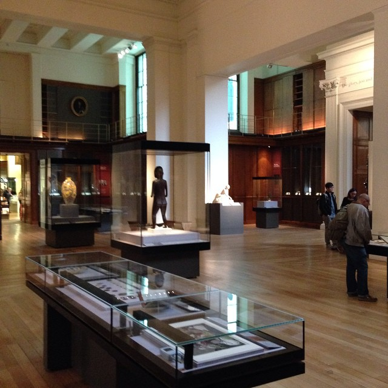
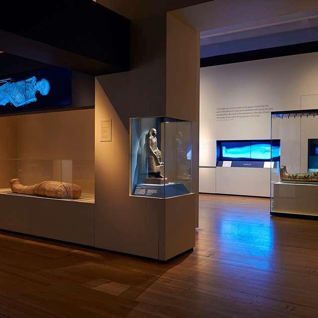
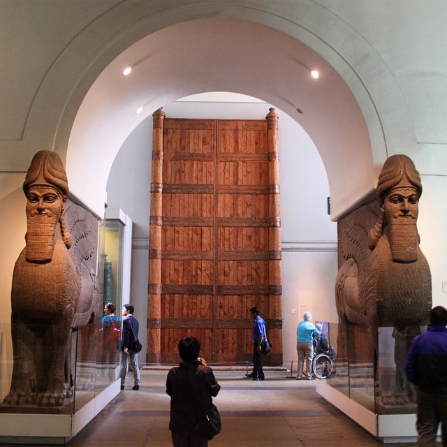
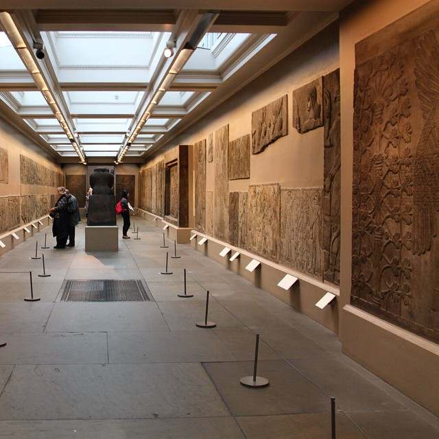
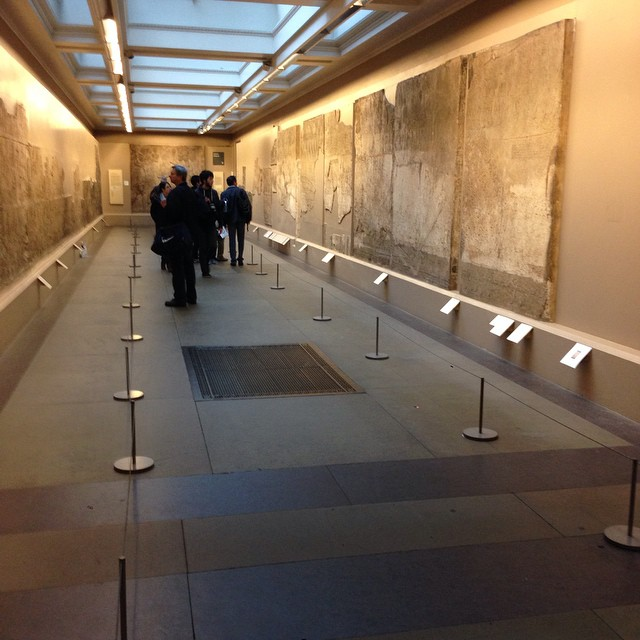
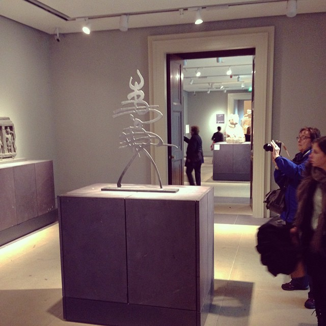
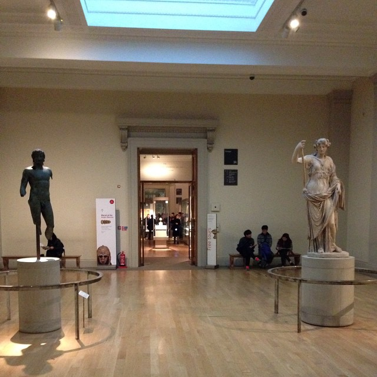
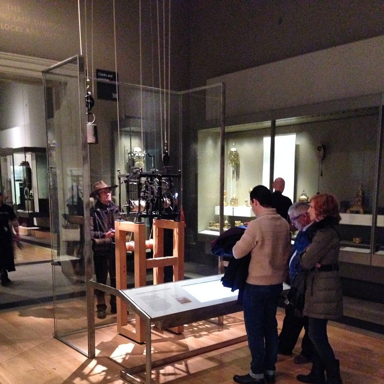
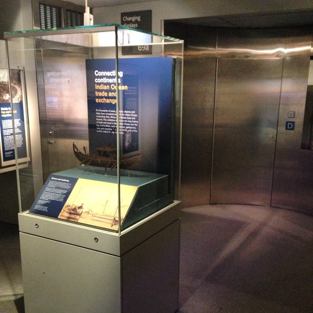

-
![A new series for #MuseumOfTheFuture – we're posting pics of all our galleries. This is Room 1, Enlightenment. The Enlightenment was an age of reason and learning that flourished across Europe and America from about 1680 to 1820. This rich and diverse permanent exhibition uses thousands of objects to demonstrate how people in Britain understood their world during this period. It is housed in the King’s Library, the former home of the library of King George III. Objects on display reveal the way in which collectors, antiquaries and travellers during this great age of discovery viewed and classified objects from the world around them.
The displays provide an introduction to the Museum and its collection, showing how our understanding of the world of nature and human achievement has changed over time.
The Enlightenment Gallery is divided into seven sections that explore the major new disciplines of the age: religion and ritual, trade and discovery, the birth of archaeology, art and civilisation, classifying the world, the decipherment of ancient scripts, and natural history. It was opened in 2003 to celebrate the 250th anniversary of the British Museum.](images/storify.com/services/proxy/2/cEHC5zZAu9PlyF9jWHa4oA/http/scontent-b.cdninstagram.com/hphotos-xpa1/t51.2885-15/10731494_622741644496627_1775134394_n.jpg) A new series for #MuseumOfTheFuture – we're posting pics of all our galleries. This is Room 1, Enlightenment. The Enlightenment was an age of reason and learning that flourished across Europe and America from about 1680 to 1820. This rich and diverse permanent exhibition uses thousands of objects to demonstrate how people in Britain understood their world during this period. It is housed in the King’s Library, the former home of the library of King George III. Objects on display reveal the way in which collectors, antiquaries and travellers during this great age of discovery viewed and classified objects from the world around them. The displays provide an introduction to the Museum and its collection, showing how our understanding of the world of nature and human achievement has changed over time. The Enlightenment Gallery is divided into seven sections that explore the major new disciplines of the age: religion and ritual, trade and discovery, the birth of archaeology, art and civilisation, classifying the world, the decipherment of ancient scripts, and natural history. It was opened in 2003 to celebrate the 250th anniversary of the British Museum.
A new series for #MuseumOfTheFuture – we're posting pics of all our galleries. This is Room 1, Enlightenment. The Enlightenment was an age of reason and learning that flourished across Europe and America from about 1680 to 1820. This rich and diverse permanent exhibition uses thousands of objects to demonstrate how people in Britain understood their world during this period. It is housed in the King’s Library, the former home of the library of King George III. Objects on display reveal the way in which collectors, antiquaries and travellers during this great age of discovery viewed and classified objects from the world around them. The displays provide an introduction to the Museum and its collection, showing how our understanding of the world of nature and human achievement has changed over time. The Enlightenment Gallery is divided into seven sections that explore the major new disciplines of the age: religion and ritual, trade and discovery, the birth of archaeology, art and civilisation, classifying the world, the decipherment of ancient scripts, and natural history. It was opened in 2003 to celebrate the 250th anniversary of the British Museum. -
Continuing our #MuseumOfTheFuture series showing all the gallery spaces, here's Room 2, Collecting the world. The Museum was founded in 1753 and opened its doors to visitors in 1759. Room 2 celebrates some of the collectors who have shaped the Museum over four centuries, as well as individuals and organisations who continue to shape its future – from Charles Townley to Grayson Perry. #art #museum #collection #history
-
![Next in our #MuseumOfTheFuture series looking at all the galleries in the British Museum, it's Room 3. Since 2005 this room has housed a series of temporary displays – The Asahi Shimbun Displays. Usually focused on one object (although sometimes featuring several), it provides a space in which to experiment with display and interpretation. Displays have featured everything from ancient African hand tools to contemporary art, from Old Masters to manga. The current display (pictured) features an enormous print by Albrecht Dürer.
#museum #art #history](images/storify.com/services/proxy/2/hjupVMNln9WlfSceh51oYQ/http/scontent-b.cdninstagram.com/hphotos-xpf1/t51.2885-15/10731953_360908370742632_1254761481_n.jpg) Next in our #MuseumOfTheFuture series looking at all the galleries in the British Museum, it's Room 3. Since 2005 this room has housed a series of temporary displays – The Asahi Shimbun Displays. Usually focused on one object (although sometimes featuring several), it provides a space in which to experiment with display and interpretation. Displays have featured everything from ancient African hand tools to contemporary art, from Old Masters to manga. The current display (pictured) features an enormous print by Albrecht Dürer. #museum #art #history
Next in our #MuseumOfTheFuture series looking at all the galleries in the British Museum, it's Room 3. Since 2005 this room has housed a series of temporary displays – The Asahi Shimbun Displays. Usually focused on one object (although sometimes featuring several), it provides a space in which to experiment with display and interpretation. Displays have featured everything from ancient African hand tools to contemporary art, from Old Masters to manga. The current display (pictured) features an enormous print by Albrecht Dürer. #museum #art #history -
![Room 4, Egyptian sculpture, is the next gallery in our #MuseumOfTheFuture series. The objects in this gallery range in date from 2600 BC to the 2nd century AD. Large-scale sculpture was an important feature of the great temples and tombs of ancient Egypt and was believed to be imbued with powerful spiritual qualities. Sculptures on display in Room 4 include stylised depictions of kings, deities and symbolic objects ranging from the time of the Old Kingdom to the middle of the Roman Period. There are also architectural pieces from temples and tombs.
An imposing stone bust of the great pharaoh Ramesses II presides over the room, while the world-famous Rosetta Stone (in the foreground of this pic), with its inscribed scripts, demonstrates how Egypt’s ancient form of pictographic writing was deciphered for the first time.
#museum #art #sculpture #history #ancientegypt #egypt #hieroglyphs](images/storify.com/services/proxy/2/I74L4hPApwpY5eRyJ0A4FA/http/scontent-a.cdninstagram.com/hphotos-xfa1/t51.2885-15/10693438_1485312645067313_984641177_n.jpg) Room 4, Egyptian sculpture, is the next gallery in our #MuseumOfTheFuture series. The objects in this gallery range in date from 2600 BC to the 2nd century AD. Large-scale sculpture was an important feature of the great temples and tombs of ancient Egypt and was believed to be imbued with powerful spiritual qualities. Sculptures on display in Room 4 include stylised depictions of kings, deities and symbolic objects ranging from the time of the Old Kingdom to the middle of the Roman Period. There are also architectural pieces from temples and tombs. An imposing stone bust of the great pharaoh Ramesses II presides over the room, while the world-famous Rosetta Stone (in the foreground of this pic), with its inscribed scripts, demonstrates how Egypt’s ancient form of pictographic writing was deciphered for the first time. #museum #art #sculpture #history #ancientegypt #egypt #hieroglyphs
Room 4, Egyptian sculpture, is the next gallery in our #MuseumOfTheFuture series. The objects in this gallery range in date from 2600 BC to the 2nd century AD. Large-scale sculpture was an important feature of the great temples and tombs of ancient Egypt and was believed to be imbued with powerful spiritual qualities. Sculptures on display in Room 4 include stylised depictions of kings, deities and symbolic objects ranging from the time of the Old Kingdom to the middle of the Roman Period. There are also architectural pieces from temples and tombs. An imposing stone bust of the great pharaoh Ramesses II presides over the room, while the world-famous Rosetta Stone (in the foreground of this pic), with its inscribed scripts, demonstrates how Egypt’s ancient form of pictographic writing was deciphered for the first time. #museum #art #sculpture #history #ancientegypt #egypt #hieroglyphs -
Next in our #MuseumOfTheFuture series looking at all the Museum's galleries: Room 5. This space is a gallery for temporary exhibitions. The current display is Ancient lives, new discoveries, looking at #8mummies from ancient Egypt and Sudan. Previous exhibitions in this gallery have included Power and Taboo, A New World and Michelangelo drawings. #museum #art #ancientegypt #history
-
Room 6, Assyrian sculpture and Balawat Gates, is the next gallery in our #MuseumOfTheFuture series. This room contains large stone sculptures and reliefs which were striking features of the palaces and temples of ancient Assyria (modern northern Iraq). Also in the gallery are two colossal winged human-headed lions, which flanked an entrance to the royal palace of King Ashurnasirpal II (883–859 BC) at Nimrud and replicas of the huge bronze gates of Shalmaneser III (858–824 BC) from Balawat.
-
The next gallery in our #MuseumOfTheFuture series is Room 7. It features a series of remarkable carved stone panels from the interior decoration of the Northwest Palace of the Neo-Assyrian King Ashurnasirpal II (883–859 BC). The panels depict the king and his subjects engaged in a variety of activities. Ashurnasirpal is shown leading military campaigns against his enemies, engaging in ritual scenes with protective demons and hunting, a royal sport in ancient Mesopotamia. #museum #london #gallery
-
The next gallery in our #MuseumOfTheFuture series is Room 9, Assyria: Nineveh. The rooms and courtyards of the Neo-Assyrian Southwest Palace of King Sennacherib (r. 704–681 BC) at Nineveh (in modern northern Iraq) were decorated with a series of detailed carved stone panels. Many of them are on display in Room 9.
-
![The next space in the #MuseumOfTheFuture series is Room 10, which is split into a series of connecting galleries – 10a (Assyria: lion hunt reliefs), 10b (Assyria: Siege of Lachish) and 10c (Assyria: Khorsabad). This photo is of the popular lion hunt reliefs. In ancient Assyria, lion-hunting was considered the sport of kings, symbolic of the ruling monarch’s duty to protect and fight for his people. The sculpted reliefs in Room 10a illustrate the sporting exploits of the last great Assyrian king, Ashurbanipal (r. 668–631 BC) and were created for his palace at Nineveh (in modern-day northern Iraq). Lachish was one of the chief cities of the kingdom of Judah in the southern Levant and in 701 BC it was captured by the Assyrian King Sennacherib (r. 704–681 BC). The siege followed the refusal of Lachish to pay tribute to the Assyrian Empire (based in modern northern Iraq) and is mentioned in the Bible. Many of the relief sculptures on display in Room 10b depict the capture of the city, alongside a selection of items and weaponry used in the siege. A 'prism' inscribed with an Assyrian account of the campaign is also on show.
The city and palace at Khorsabad (in modern northern Iraq), was built for the Assyrian King Sargon II (r. 721–705 BC). The palace entrances were originally dominated by pairs of colossal human-headed winged bulls, which were intended as guardians, accompanied by protective spirits with magical powers. Two of these impressive statues now stand in Room 10c, along with carvings depicting the king and crown prince, royal courtiers and hunting scenes. Inscriptions on display in the gallery come from a similar winged bull from the palace of Sennacherib (r. 704–681 BC) at nearby Nineveh and were badly burnt when the city was destroyed in 612 BC.](images/storify.com/services/proxy/2/IH9sr3bmDz4iMKSsweSRFA/http/scontent-a.cdninstagram.com/hphotos-xap1/t51.2885-15/10731742_1411650395776628_1766172570_n.jpg) The next space in the #MuseumOfTheFuture series is Room 10, which is split into a series of connecting galleries – 10a (Assyria: lion hunt reliefs), 10b (Assyria: Siege of Lachish) and 10c (Assyria: Khorsabad). This photo is of the popular lion hunt reliefs. In ancient Assyria, lion-hunting was considered the sport of kings, symbolic of the ruling monarch’s duty to protect and fight for his people. The sculpted reliefs in Room 10a illustrate the sporting exploits of the last great Assyrian king, Ashurbanipal (r. 668–631 BC) and were created for his palace at Nineveh (in modern-day northern Iraq). Lachish was one of the chief cities of the kingdom of Judah in the southern Levant and in 701 BC it was captured by the Assyrian King Sennacherib (r. 704–681 BC). The siege followed the refusal of Lachish to pay tribute to the Assyrian Empire (based in modern northern Iraq) and is mentioned in the Bible. Many of the relief sculptures on display in Room 10b depict the capture of the city, alongside a selection of items and weaponry used in the siege. A 'prism' inscribed with an Assyrian account of the campaign is also on show. The city and palace at Khorsabad (in modern northern Iraq), was built for the Assyrian King Sargon II (r. 721–705 BC). The palace entrances were originally dominated by pairs of colossal human-headed winged bulls, which were intended as guardians, accompanied by protective spirits with magical powers. Two of these impressive statues now stand in Room 10c, along with carvings depicting the king and crown prince, royal courtiers and hunting scenes. Inscriptions on display in the gallery come from a similar winged bull from the palace of Sennacherib (r. 704–681 BC) at nearby Nineveh and were badly burnt when the city was destroyed in 612 BC.
The next space in the #MuseumOfTheFuture series is Room 10, which is split into a series of connecting galleries – 10a (Assyria: lion hunt reliefs), 10b (Assyria: Siege of Lachish) and 10c (Assyria: Khorsabad). This photo is of the popular lion hunt reliefs. In ancient Assyria, lion-hunting was considered the sport of kings, symbolic of the ruling monarch’s duty to protect and fight for his people. The sculpted reliefs in Room 10a illustrate the sporting exploits of the last great Assyrian king, Ashurbanipal (r. 668–631 BC) and were created for his palace at Nineveh (in modern-day northern Iraq). Lachish was one of the chief cities of the kingdom of Judah in the southern Levant and in 701 BC it was captured by the Assyrian King Sennacherib (r. 704–681 BC). The siege followed the refusal of Lachish to pay tribute to the Assyrian Empire (based in modern northern Iraq) and is mentioned in the Bible. Many of the relief sculptures on display in Room 10b depict the capture of the city, alongside a selection of items and weaponry used in the siege. A 'prism' inscribed with an Assyrian account of the campaign is also on show. The city and palace at Khorsabad (in modern northern Iraq), was built for the Assyrian King Sargon II (r. 721–705 BC). The palace entrances were originally dominated by pairs of colossal human-headed winged bulls, which were intended as guardians, accompanied by protective spirits with magical powers. Two of these impressive statues now stand in Room 10c, along with carvings depicting the king and crown prince, royal courtiers and hunting scenes. Inscriptions on display in the gallery come from a similar winged bull from the palace of Sennacherib (r. 704–681 BC) at nearby Nineveh and were badly burnt when the city was destroyed in 612 BC. -
![Room 11, Greece: Cycladic Islands is the next #MuseumOfTheFuture gallery in our series.
During the early part of the Greek Bronze Age (3200–1500 BC), the people of the Aegean islands known as the Cyclades began to produce items made from copper, silver, lead and the fine white marble of the area. They depended on farming and fishing, but increasingly travelled by boat between the islands and further afield. Objects on display in Room 11 include marble vessels and the well-known Cycladic stylised figurines. Later decorative fragments from a tomb at Mycenae known as the Treasury of Atreus are located outside the gallery.](images/storify.com/services/proxy/2/acg9413EDDFoJC91Vw7-EA/http/scontent-a.cdninstagram.com/hphotos-xap1/t51.2885-15/10727460_314119828793591_518751500_n.jpg) Room 11, Greece: Cycladic Islands is the next #MuseumOfTheFuture gallery in our series. During the early part of the Greek Bronze Age (3200–1500 BC), the people of the Aegean islands known as the Cyclades began to produce items made from copper, silver, lead and the fine white marble of the area. They depended on farming and fishing, but increasingly travelled by boat between the islands and further afield. Objects on display in Room 11 include marble vessels and the well-known Cycladic stylised figurines. Later decorative fragments from a tomb at Mycenae known as the Treasury of Atreus are located outside the gallery.
Room 11, Greece: Cycladic Islands is the next #MuseumOfTheFuture gallery in our series. During the early part of the Greek Bronze Age (3200–1500 BC), the people of the Aegean islands known as the Cyclades began to produce items made from copper, silver, lead and the fine white marble of the area. They depended on farming and fishing, but increasingly travelled by boat between the islands and further afield. Objects on display in Room 11 include marble vessels and the well-known Cycladic stylised figurines. Later decorative fragments from a tomb at Mycenae known as the Treasury of Atreus are located outside the gallery. -
![Greece: Minoans and Mycenaeans (Room 12) is the next space in our #MuseumOfTheFuture series of galleries. Minoan Crete was dominated by great palaces, most of which were founded in about 1950 BC. Material from the palace of Knossos is displayed in this gallery, along with pottery, bronzes and stone vases from elsewhere in Crete. An impressive group of jewellery and treasure on display in Room 12a, believed to have been found on the island of Aigina, demonstrates the craftsmanship of the period. A bronze sculpture from around 1600 BC represents an acrobat ‘bull-jumping’. This sport may have had links with the legend of the Minotaur: the bull-headed monster slain by the hero Theseus.
The Mycenaean period of the later Greek Bronze Age was viewed by the Greeks as the 'age of heroes' and perhaps provides the historical background to many of the stories told in later Greek mythology, including Homer's epics. Objects and artworks from this time are found throughout mainland Greece and the Greek islands. Distinctive Mycenaean pottery was distributed widely across the eastern Mediterranean. Following the collapse of this civilisation in the 12th century BC, Greece entered a 'Dark Age' of relative poverty and isolation.](images/storify.com/services/proxy/2/d0Oj_cBkbCd87IGJHPJ01g/http/scontent-a.cdninstagram.com/hphotos-xfp1/t51.2885-15/10785013_750983681640011_1901016429_n.jpg) Greece: Minoans and Mycenaeans (Room 12) is the next space in our #MuseumOfTheFuture series of galleries. Minoan Crete was dominated by great palaces, most of which were founded in about 1950 BC. Material from the palace of Knossos is displayed in this gallery, along with pottery, bronzes and stone vases from elsewhere in Crete. An impressive group of jewellery and treasure on display in Room 12a, believed to have been found on the island of Aigina, demonstrates the craftsmanship of the period. A bronze sculpture from around 1600 BC represents an acrobat ‘bull-jumping’. This sport may have had links with the legend of the Minotaur: the bull-headed monster slain by the hero Theseus. The Mycenaean period of the later Greek Bronze Age was viewed by the Greeks as the 'age of heroes' and perhaps provides the historical background to many of the stories told in later Greek mythology, including Homer's epics. Objects and artworks from this time are found throughout mainland Greece and the Greek islands. Distinctive Mycenaean pottery was distributed widely across the eastern Mediterranean. Following the collapse of this civilisation in the 12th century BC, Greece entered a 'Dark Age' of relative poverty and isolation.
Greece: Minoans and Mycenaeans (Room 12) is the next space in our #MuseumOfTheFuture series of galleries. Minoan Crete was dominated by great palaces, most of which were founded in about 1950 BC. Material from the palace of Knossos is displayed in this gallery, along with pottery, bronzes and stone vases from elsewhere in Crete. An impressive group of jewellery and treasure on display in Room 12a, believed to have been found on the island of Aigina, demonstrates the craftsmanship of the period. A bronze sculpture from around 1600 BC represents an acrobat ‘bull-jumping’. This sport may have had links with the legend of the Minotaur: the bull-headed monster slain by the hero Theseus. The Mycenaean period of the later Greek Bronze Age was viewed by the Greeks as the 'age of heroes' and perhaps provides the historical background to many of the stories told in later Greek mythology, including Homer's epics. Objects and artworks from this time are found throughout mainland Greece and the Greek islands. Distinctive Mycenaean pottery was distributed widely across the eastern Mediterranean. Following the collapse of this civilisation in the 12th century BC, Greece entered a 'Dark Age' of relative poverty and isolation. -
![Room 13, Greece 1050–520 BC, is the next room in our series of #MuseumOfTheFuture galleries.
Following the collapse of Mycenaean palace society and a period of relative poverty and isolation, Greece experienced a cultural and political renaissance. From the 8th century BC onwards, renewed contact with the Near East, Anatolia, Phoenicia, Egypt, and other peoples around the Mediterranean had a profound impact on Greek culture.
The linear Geometric style of pottery gave way to 'orientalising' motifs, such as animals and florals. A Greek script based on the Phoenician alphabet was developed, Homer composed his epic poems and a new political unit, the city-state (polis), emerged.
Competition between these states often resulted in wars but also in athletic and musical contests such as the Olympic Games.
Objects on display in Room 13 include sculpture, painted pottery, jewellery, coins and other artefacts from Athens, Sparta, Corinth, and East Greece.](images/storify.com/services/proxy/2/3nAYtR_QDYAAiwVNphmwoQ/http/scontent-a.cdninstagram.com/hphotos-xaf1/t51.2885-15/10784832_746128958769335_959322904_n.jpg) Room 13, Greece 1050–520 BC, is the next room in our series of #MuseumOfTheFuture galleries. Following the collapse of Mycenaean palace society and a period of relative poverty and isolation, Greece experienced a cultural and political renaissance. From the 8th century BC onwards, renewed contact with the Near East, Anatolia, Phoenicia, Egypt, and other peoples around the Mediterranean had a profound impact on Greek culture. The linear Geometric style of pottery gave way to 'orientalising' motifs, such as animals and florals. A Greek script based on the Phoenician alphabet was developed, Homer composed his epic poems and a new political unit, the city-state (polis), emerged. Competition between these states often resulted in wars but also in athletic and musical contests such as the Olympic Games. Objects on display in Room 13 include sculpture, painted pottery, jewellery, coins and other artefacts from Athens, Sparta, Corinth, and East Greece.
Room 13, Greece 1050–520 BC, is the next room in our series of #MuseumOfTheFuture galleries. Following the collapse of Mycenaean palace society and a period of relative poverty and isolation, Greece experienced a cultural and political renaissance. From the 8th century BC onwards, renewed contact with the Near East, Anatolia, Phoenicia, Egypt, and other peoples around the Mediterranean had a profound impact on Greek culture. The linear Geometric style of pottery gave way to 'orientalising' motifs, such as animals and florals. A Greek script based on the Phoenician alphabet was developed, Homer composed his epic poems and a new political unit, the city-state (polis), emerged. Competition between these states often resulted in wars but also in athletic and musical contests such as the Olympic Games. Objects on display in Room 13 include sculpture, painted pottery, jewellery, coins and other artefacts from Athens, Sparta, Corinth, and East Greece. -
![It's time for the next in our #MuseumOfTheFuture series of gallery spaces. This is Room 14, Greek vases. Andokides, whose signed vase is displayed in this room, was the leader of an innovative group of potters and painters working in Athens in the late 6th century BC. At this time, a number of new ideas were introduced the decoration of pottery. Most important was the red-figure technique, which featured figures reserved in red against a black background.
The objects on display in Room 14 include Athenian pottery depicting hunting, dancing and mythology.](images/storify.com/services/proxy/2/fjGyVDFgbZ-cavymTee3Ww/http/scontent-b.cdninstagram.com/hphotos-xap1/t51.2885-15/1799814_390490704453520_1258327590_n.jpg) It's time for the next in our #MuseumOfTheFuture series of gallery spaces. This is Room 14, Greek vases. Andokides, whose signed vase is displayed in this room, was the leader of an innovative group of potters and painters working in Athens in the late 6th century BC. At this time, a number of new ideas were introduced the decoration of pottery. Most important was the red-figure technique, which featured figures reserved in red against a black background. The objects on display in Room 14 include Athenian pottery depicting hunting, dancing and mythology.
It's time for the next in our #MuseumOfTheFuture series of gallery spaces. This is Room 14, Greek vases. Andokides, whose signed vase is displayed in this room, was the leader of an innovative group of potters and painters working in Athens in the late 6th century BC. At this time, a number of new ideas were introduced the decoration of pottery. Most important was the red-figure technique, which featured figures reserved in red against a black background. The objects on display in Room 14 include Athenian pottery depicting hunting, dancing and mythology. -
![We've reached Room 15 on our #MuseumOfTheFuture virtual tour – Greece: Athens and Lycia. Following the defeat of the Persian invasion of Greece in 480–479 BC, democratic Athens built up a powerful maritime empire. In an age of prosperity Athenian artists flourished, and Athens’ distinctive painted pottery was exported all over the Mediterranean world. The bust in this picture is a Roman copy of a Greek original of the Athenian statesman Pericles.
In Room 15, pottery is shown alongside other objects to illustrate such themes as democracy, the human body, the Athenian Empire and the people of Athens. Among those pressed into joining Athens’ tribute-paying were the Lycians – so-called allies of the empire living in what is now south-west Turkey.
Sculpture in this gallery comes from tombs and shrines built on the acropolis of Lycian Xanthos. Objects in the gallery date from around 520–430 BC.](images/storify.com/services/proxy/2/ZPJnMIq6FlUfCBjBq_6onw/http/scontent-a.cdninstagram.com/hphotos-xaf1/t51.2885-15/10802460_1497349343868295_1932637284_n.jpg) We've reached Room 15 on our #MuseumOfTheFuture virtual tour – Greece: Athens and Lycia. Following the defeat of the Persian invasion of Greece in 480–479 BC, democratic Athens built up a powerful maritime empire. In an age of prosperity Athenian artists flourished, and Athens’ distinctive painted pottery was exported all over the Mediterranean world. The bust in this picture is a Roman copy of a Greek original of the Athenian statesman Pericles. In Room 15, pottery is shown alongside other objects to illustrate such themes as democracy, the human body, the Athenian Empire and the people of Athens. Among those pressed into joining Athens’ tribute-paying were the Lycians – so-called allies of the empire living in what is now south-west Turkey. Sculpture in this gallery comes from tombs and shrines built on the acropolis of Lycian Xanthos. Objects in the gallery date from around 520–430 BC.
We've reached Room 15 on our #MuseumOfTheFuture virtual tour – Greece: Athens and Lycia. Following the defeat of the Persian invasion of Greece in 480–479 BC, democratic Athens built up a powerful maritime empire. In an age of prosperity Athenian artists flourished, and Athens’ distinctive painted pottery was exported all over the Mediterranean world. The bust in this picture is a Roman copy of a Greek original of the Athenian statesman Pericles. In Room 15, pottery is shown alongside other objects to illustrate such themes as democracy, the human body, the Athenian Empire and the people of Athens. Among those pressed into joining Athens’ tribute-paying were the Lycians – so-called allies of the empire living in what is now south-west Turkey. Sculpture in this gallery comes from tombs and shrines built on the acropolis of Lycian Xanthos. Objects in the gallery date from around 520–430 BC. -
![Room 16, Greece: Bassai sculptures, is the next stop on our #MuseumOfTheFuture tour.
The Temple of Apollo Epikourios ('Apollo the Helper') was built high on a rocky ridge of Mount Kotylion at Bassai in south-west Arcadia, a region of the Greek Peloponnese. The Greek historian Pausanias wrote, in the 2nd century AD, that the name 'Helper' was given to Apollo by citizens of nearby Phigaleia, as thanks for their deliverance from the plague of 429–427 BC. He also wrote that the temple was designed by Iktinos, one of the architects of the Parthenon.
The 23 blocks of the frieze that ran around the interior of the building show the battle between the Greeks and Amazons and the Lapiths and Centaurs.
This frieze is displayed on the upper level of Room 16. The remains of some of the 12 sculptured metopes that decorated the Doric frieze of the north and south porches can be seen on the lower level. The upper level is open 10.00–11.00 daily.](images/storify.com/services/proxy/2/nRjrmv-polzgPgSTxmaJOQ/http/scontent-a.cdninstagram.com/hphotos-xfp1/t51.2885-15/10729435_305373976318463_33137510_n.jpg) Room 16, Greece: Bassai sculptures, is the next stop on our #MuseumOfTheFuture tour. The Temple of Apollo Epikourios ('Apollo the Helper') was built high on a rocky ridge of Mount Kotylion at Bassai in south-west Arcadia, a region of the Greek Peloponnese. The Greek historian Pausanias wrote, in the 2nd century AD, that the name 'Helper' was given to Apollo by citizens of nearby Phigaleia, as thanks for their deliverance from the plague of 429–427 BC. He also wrote that the temple was designed by Iktinos, one of the architects of the Parthenon. The 23 blocks of the frieze that ran around the interior of the building show the battle between the Greeks and Amazons and the Lapiths and Centaurs. This frieze is displayed on the upper level of Room 16. The remains of some of the 12 sculptured metopes that decorated the Doric frieze of the north and south porches can be seen on the lower level. The upper level is open 10.00–11.00 daily.
Room 16, Greece: Bassai sculptures, is the next stop on our #MuseumOfTheFuture tour. The Temple of Apollo Epikourios ('Apollo the Helper') was built high on a rocky ridge of Mount Kotylion at Bassai in south-west Arcadia, a region of the Greek Peloponnese. The Greek historian Pausanias wrote, in the 2nd century AD, that the name 'Helper' was given to Apollo by citizens of nearby Phigaleia, as thanks for their deliverance from the plague of 429–427 BC. He also wrote that the temple was designed by Iktinos, one of the architects of the Parthenon. The 23 blocks of the frieze that ran around the interior of the building show the battle between the Greeks and Amazons and the Lapiths and Centaurs. This frieze is displayed on the upper level of Room 16. The remains of some of the 12 sculptured metopes that decorated the Doric frieze of the north and south porches can be seen on the lower level. The upper level is open 10.00–11.00 daily. -
![The next gallery in our #MuseumOfTheFuture series is Room 17, the Nereid Monument.
The Nereid Monument (390–380 BC) takes its name from the nereids, sea-nymphs whose statues were placed between the columns of this monumental tomb. It was built for Erbinna (Greek Arbinas), ruler of Lycian Xanthos in what is now south-west Turkey. Although he was not Greek, Erbinna chose to be buried in a tomb that resembles a Greek temple of the Ionic order. The monument is much influenced by the Ionic temples of the Acropolis of Athens and its lavish decorative sculpture, which can be seen reconstructed and displayed around the walls of Room 17, is a mixture of Greek and Lycian style and iconography.](images/storify.com/services/proxy/2/H4QnwMBfSkNFm4t23tIatQ/http/scontent-a.cdninstagram.com/hphotos-xaf1/t51.2885-15/10729278_781880015206981_710796422_n.jpg) The next gallery in our #MuseumOfTheFuture series is Room 17, the Nereid Monument. The Nereid Monument (390–380 BC) takes its name from the nereids, sea-nymphs whose statues were placed between the columns of this monumental tomb. It was built for Erbinna (Greek Arbinas), ruler of Lycian Xanthos in what is now south-west Turkey. Although he was not Greek, Erbinna chose to be buried in a tomb that resembles a Greek temple of the Ionic order. The monument is much influenced by the Ionic temples of the Acropolis of Athens and its lavish decorative sculpture, which can be seen reconstructed and displayed around the walls of Room 17, is a mixture of Greek and Lycian style and iconography.
The next gallery in our #MuseumOfTheFuture series is Room 17, the Nereid Monument. The Nereid Monument (390–380 BC) takes its name from the nereids, sea-nymphs whose statues were placed between the columns of this monumental tomb. It was built for Erbinna (Greek Arbinas), ruler of Lycian Xanthos in what is now south-west Turkey. Although he was not Greek, Erbinna chose to be buried in a tomb that resembles a Greek temple of the Ionic order. The monument is much influenced by the Ionic temples of the Acropolis of Athens and its lavish decorative sculpture, which can be seen reconstructed and displayed around the walls of Room 17, is a mixture of Greek and Lycian style and iconography. -
![The next gallery on our #MuseumOfTheFuture tour is Room 18, Greece: Parthenon.
The Parthenon was built as a temple dedicated to the goddess Athena. It was the centrepiece of an ambitious building programme on the Acropolis of Athens.
The temple’s great size and lavish use of white marble was intended to show off the city’s power and wealth at the height of its empire. Room 18 exhibits sculptures that once decorated the outside of the building.
The pediments and metopes illustrate episodes from Greek mythology, while the frieze represents the people of Athens of the 5th century BC in religious procession.
Rooms 18a and 18b feature fragments of the Parthenon sculpture and also pieces of architecture. Video displays using computer graphics explain how the sculptures were placed on the building, and a touch tour for visually impaired visitors includes a model, some original architecture and plaster casts of the frieze.](images/storify.com/services/proxy/2/l5K0tkMwuEPxTAjgAU5xYg/http/scontent-a.cdninstagram.com/hphotos-xfp1/t51.2885-15/10787779_360138974155347_919121979_n.jpg) The next gallery on our #MuseumOfTheFuture tour is Room 18, Greece: Parthenon. The Parthenon was built as a temple dedicated to the goddess Athena. It was the centrepiece of an ambitious building programme on the Acropolis of Athens. The temple’s great size and lavish use of white marble was intended to show off the city’s power and wealth at the height of its empire. Room 18 exhibits sculptures that once decorated the outside of the building. The pediments and metopes illustrate episodes from Greek mythology, while the frieze represents the people of Athens of the 5th century BC in religious procession. Rooms 18a and 18b feature fragments of the Parthenon sculpture and also pieces of architecture. Video displays using computer graphics explain how the sculptures were placed on the building, and a touch tour for visually impaired visitors includes a model, some original architecture and plaster casts of the frieze.
The next gallery on our #MuseumOfTheFuture tour is Room 18, Greece: Parthenon. The Parthenon was built as a temple dedicated to the goddess Athena. It was the centrepiece of an ambitious building programme on the Acropolis of Athens. The temple’s great size and lavish use of white marble was intended to show off the city’s power and wealth at the height of its empire. Room 18 exhibits sculptures that once decorated the outside of the building. The pediments and metopes illustrate episodes from Greek mythology, while the frieze represents the people of Athens of the 5th century BC in religious procession. Rooms 18a and 18b feature fragments of the Parthenon sculpture and also pieces of architecture. Video displays using computer graphics explain how the sculptures were placed on the building, and a touch tour for visually impaired visitors includes a model, some original architecture and plaster casts of the frieze. -
![Room 19, Greece: Athens is the next space in our #MuseumOfTheFuture series. When the Parthenon was completed in 432 BC, Athens had already embarked on the disastrous 'Peloponnesian War' against Sparta. Final defeat in 404 BC brought about the end of Athens’ golden age and stripped the city of its empire, defences and – for a time at least – its democratic government. The building programme on the Athenian Acropolis was interrupted by the war. The temple of Athena Nike and the Erechtheum were two buildings that suffered delays and both are represented by sculpture and architecture in Room 19.
Marble grave-markers and smaller objects explore the themes of war and death, and war and escapism.](images/storify.com/services/proxy/2/KDcK3SYl2V3ptkEdLxWnkg/http/scontent-b.cdninstagram.com/hphotos-xfp1/t51.2885-15/10787749_341138502724373_679834643_n.jpg) Room 19, Greece: Athens is the next space in our #MuseumOfTheFuture series. When the Parthenon was completed in 432 BC, Athens had already embarked on the disastrous 'Peloponnesian War' against Sparta. Final defeat in 404 BC brought about the end of Athens’ golden age and stripped the city of its empire, defences and – for a time at least – its democratic government. The building programme on the Athenian Acropolis was interrupted by the war. The temple of Athena Nike and the Erechtheum were two buildings that suffered delays and both are represented by sculpture and architecture in Room 19. Marble grave-markers and smaller objects explore the themes of war and death, and war and escapism.
Room 19, Greece: Athens is the next space in our #MuseumOfTheFuture series. When the Parthenon was completed in 432 BC, Athens had already embarked on the disastrous 'Peloponnesian War' against Sparta. Final defeat in 404 BC brought about the end of Athens’ golden age and stripped the city of its empire, defences and – for a time at least – its democratic government. The building programme on the Athenian Acropolis was interrupted by the war. The temple of Athena Nike and the Erechtheum were two buildings that suffered delays and both are represented by sculpture and architecture in Room 19. Marble grave-markers and smaller objects explore the themes of war and death, and war and escapism. -
![Greeks and Lycians 400–325 BC (Room 20) is the next in our #MuseumOfTheFuture series.
Following the defeat of Athens and the collapse of its empire in 404 BC, a power struggle on both sides of the Aegean Sea followed. In the Greek mainland the once-independent city-states fell under the rising power of Macedon. On the other side of the Aegean, Persia reasserted its imperial power over the East-Greek cities. Objects on display in Room 20 illustrate the rise in private luxury that accompanied political and social change in the 4th century BC. This includes gold jewellery, exquisite metalwork showing the influence of Persian art, and a focus on novel representation of the human body.
A tomb from Lycian Xanthos built in around 360 BC for Payava, the Persian-appointed governor of the city, dominates the centre of the gallery.](images/storify.com/services/proxy/2/G2hrxzlgYu2DZ9JLFpliJg/http/scontent-b.cdninstagram.com/hphotos-xap1/t51.2885-15/10785003_1535753400003446_105906736_n.jpg) Greeks and Lycians 400–325 BC (Room 20) is the next in our #MuseumOfTheFuture series. Following the defeat of Athens and the collapse of its empire in 404 BC, a power struggle on both sides of the Aegean Sea followed. In the Greek mainland the once-independent city-states fell under the rising power of Macedon. On the other side of the Aegean, Persia reasserted its imperial power over the East-Greek cities. Objects on display in Room 20 illustrate the rise in private luxury that accompanied political and social change in the 4th century BC. This includes gold jewellery, exquisite metalwork showing the influence of Persian art, and a focus on novel representation of the human body. A tomb from Lycian Xanthos built in around 360 BC for Payava, the Persian-appointed governor of the city, dominates the centre of the gallery.
Greeks and Lycians 400–325 BC (Room 20) is the next in our #MuseumOfTheFuture series. Following the defeat of Athens and the collapse of its empire in 404 BC, a power struggle on both sides of the Aegean Sea followed. In the Greek mainland the once-independent city-states fell under the rising power of Macedon. On the other side of the Aegean, Persia reasserted its imperial power over the East-Greek cities. Objects on display in Room 20 illustrate the rise in private luxury that accompanied political and social change in the 4th century BC. This includes gold jewellery, exquisite metalwork showing the influence of Persian art, and a focus on novel representation of the human body. A tomb from Lycian Xanthos built in around 360 BC for Payava, the Persian-appointed governor of the city, dominates the centre of the gallery. -
![Room 21, the Mausoleum of Halikarnassos, is our next stop in our series of #MuseumOfTheFuture gallery spaces. The Mausoleum at Halikarnassos (modern Bodrum) was a large and elaborate tomb built for king Maussollos of Karia, (in what is now south-west Turkey) in around 350 BC. Although built on a much grander scale, the Mausoleum took inspiration for its design from the Nereid Monument of Lycian Xanthos. Listed as one of the Seven Wonders of the Ancient World, it gave its name to all subsequent monumental tombs. Standing on a tall podium, the building was up to 40 metres in height and was decorated with a large amount of sculpture, carved both in the round and in relief. The sculptural themes explored life in the court of the Karian king and his hopes for the afterlife.
Colossal free-standing statues and marble relief slabs from the Mausoleum can be seen in Room 21, as well as fragments of the huge marble, four-horse chariot that crowned the pyramid roof.](images/storify.com/services/proxy/2/vSj0qn-VV7n24Nuj5dDG6g/http/scontent-a.cdninstagram.com/hphotos-xfp1/t51.2885-15/10784887_345490225619356_1230905340_n.jpg) Room 21, the Mausoleum of Halikarnassos, is our next stop in our series of #MuseumOfTheFuture gallery spaces. The Mausoleum at Halikarnassos (modern Bodrum) was a large and elaborate tomb built for king Maussollos of Karia, (in what is now south-west Turkey) in around 350 BC. Although built on a much grander scale, the Mausoleum took inspiration for its design from the Nereid Monument of Lycian Xanthos. Listed as one of the Seven Wonders of the Ancient World, it gave its name to all subsequent monumental tombs. Standing on a tall podium, the building was up to 40 metres in height and was decorated with a large amount of sculpture, carved both in the round and in relief. The sculptural themes explored life in the court of the Karian king and his hopes for the afterlife. Colossal free-standing statues and marble relief slabs from the Mausoleum can be seen in Room 21, as well as fragments of the huge marble, four-horse chariot that crowned the pyramid roof.
Room 21, the Mausoleum of Halikarnassos, is our next stop in our series of #MuseumOfTheFuture gallery spaces. The Mausoleum at Halikarnassos (modern Bodrum) was a large and elaborate tomb built for king Maussollos of Karia, (in what is now south-west Turkey) in around 350 BC. Although built on a much grander scale, the Mausoleum took inspiration for its design from the Nereid Monument of Lycian Xanthos. Listed as one of the Seven Wonders of the Ancient World, it gave its name to all subsequent monumental tombs. Standing on a tall podium, the building was up to 40 metres in height and was decorated with a large amount of sculpture, carved both in the round and in relief. The sculptural themes explored life in the court of the Karian king and his hopes for the afterlife. Colossal free-standing statues and marble relief slabs from the Mausoleum can be seen in Room 21, as well as fragments of the huge marble, four-horse chariot that crowned the pyramid roof. -
![We start the day with Room 22, The world of Alexander – the next in our sequence looking at gallery spaces for #MuseumOfTheFuture.
The Hellenistic period dates from the death of Alexander the Great in 323 BC to the defeat of Cleopatra VII and Mark Antony at Actium in 31 BC. After his death, Alexander’s empire was divided up into kingdoms, ruled by his generals. The major dynasties supported major architectural programmes and were great patrons of the arts and culture.
Objects on display in Room 22 include a colossal carved column drum from the Temple of Artemis at Ephesos (one of the Seven Wonders of the Ancient World), the Demeter from Knidos (in what is now south-west Turkey), and Greek bronzes.
Displays of smaller objects show the skill of ancient goldsmiths, metalworkers, potters, coroplasts (makers of clay or terracotta figurines) and gem-cutters.](images/storify.com/services/proxy/2/z68w-Aso-jXMDan3DYHnZA/http/scontent-b.cdninstagram.com/hphotos-xfp1/t51.2885-15/10747873_1493333754281310_1017390740_n.jpg) We start the day with Room 22, The world of Alexander – the next in our sequence looking at gallery spaces for #MuseumOfTheFuture. The Hellenistic period dates from the death of Alexander the Great in 323 BC to the defeat of Cleopatra VII and Mark Antony at Actium in 31 BC. After his death, Alexander’s empire was divided up into kingdoms, ruled by his generals. The major dynasties supported major architectural programmes and were great patrons of the arts and culture. Objects on display in Room 22 include a colossal carved column drum from the Temple of Artemis at Ephesos (one of the Seven Wonders of the Ancient World), the Demeter from Knidos (in what is now south-west Turkey), and Greek bronzes. Displays of smaller objects show the skill of ancient goldsmiths, metalworkers, potters, coroplasts (makers of clay or terracotta figurines) and gem-cutters.
We start the day with Room 22, The world of Alexander – the next in our sequence looking at gallery spaces for #MuseumOfTheFuture. The Hellenistic period dates from the death of Alexander the Great in 323 BC to the defeat of Cleopatra VII and Mark Antony at Actium in 31 BC. After his death, Alexander’s empire was divided up into kingdoms, ruled by his generals. The major dynasties supported major architectural programmes and were great patrons of the arts and culture. Objects on display in Room 22 include a colossal carved column drum from the Temple of Artemis at Ephesos (one of the Seven Wonders of the Ancient World), the Demeter from Knidos (in what is now south-west Turkey), and Greek bronzes. Displays of smaller objects show the skill of ancient goldsmiths, metalworkers, potters, coroplasts (makers of clay or terracotta figurines) and gem-cutters. -
![Next up today is Room 23, Greek and Roman sculpture – the next room in our #MuseumOfTheFuture series. Rome’s conquest of Greece by the 1st century BC subjected Roman artistic taste to the influence of Greek style. Many of the sculptures on display in Room 23 are Roman versions of Greek originals. Roman copies, made from the 1st century BC to the 2nd century AD, often provide useful information on the appearance of ancient bronze sculptures that no longer exist.
One such marble statue on display in Room 23 may have been inspired by the famous lost Greek bronze of a 'diadoumenos' (athlete binding a victory ribbon around his head), originally created by the sculptor Polykleitos in the 5th century BC. The sculpture in the picture is Aphrodite, goddess of love, crouching at her bath and is a Roman copy of a Greek original (it's also known as Lely's Venus). In the background you can see the entrance to Room 10, flanked by Assyrian colossal human-headed winged bulls.](images/storify.com/services/proxy/2/Ybaq28NIM0g40y2zadp0UQ/http/scontent-b.cdninstagram.com/hphotos-xap1/t51.2885-15/10735340_616647665111573_1666579429_n.jpg) Next up today is Room 23, Greek and Roman sculpture – the next room in our #MuseumOfTheFuture series. Rome’s conquest of Greece by the 1st century BC subjected Roman artistic taste to the influence of Greek style. Many of the sculptures on display in Room 23 are Roman versions of Greek originals. Roman copies, made from the 1st century BC to the 2nd century AD, often provide useful information on the appearance of ancient bronze sculptures that no longer exist. One such marble statue on display in Room 23 may have been inspired by the famous lost Greek bronze of a 'diadoumenos' (athlete binding a victory ribbon around his head), originally created by the sculptor Polykleitos in the 5th century BC. The sculpture in the picture is Aphrodite, goddess of love, crouching at her bath and is a Roman copy of a Greek original (it's also known as Lely's Venus). In the background you can see the entrance to Room 10, flanked by Assyrian colossal human-headed winged bulls.
Next up today is Room 23, Greek and Roman sculpture – the next room in our #MuseumOfTheFuture series. Rome’s conquest of Greece by the 1st century BC subjected Roman artistic taste to the influence of Greek style. Many of the sculptures on display in Room 23 are Roman versions of Greek originals. Roman copies, made from the 1st century BC to the 2nd century AD, often provide useful information on the appearance of ancient bronze sculptures that no longer exist. One such marble statue on display in Room 23 may have been inspired by the famous lost Greek bronze of a 'diadoumenos' (athlete binding a victory ribbon around his head), originally created by the sculptor Polykleitos in the 5th century BC. The sculpture in the picture is Aphrodite, goddess of love, crouching at her bath and is a Roman copy of a Greek original (it's also known as Lely's Venus). In the background you can see the entrance to Room 10, flanked by Assyrian colossal human-headed winged bulls. -
![It's time for our next gallery in our #MuseumOfTheFuture series. It's Room 24, The Wellcome Trust Gallery of Living and Dying.
People throughout the world deal with the tough realities of life in many different ways. The displays in Room 24 explore different approaches to our shared challenges as human beings, focusing on how diverse cultures seek to maintain health and well-being.
The displays provide case studies on the theme of living and dying using material from New Zealand, Ghana, the Solomon Islands, South America and the North American Arctic.
The displays consider different approaches to averting illness, danger and trouble, and investigate people's reliance on relationships – with each other, the animal kingdom, spiritual powers spirits and the world around us.
Objects range from ancient gold pieces and sculptures to a specially commissioned art installation: Cradle to Grave by Pharmacopoeia. In this picture you can see Hoa Hakananai'a, a giant statue from Easter Island (Rapa Nui).](images/storify.com/services/proxy/2/ES3zv4ksIL1IjqSKeG9t3A/http/scontent-b.cdninstagram.com/hphotos-xpf1/t51.2885-15/10735459_1503642246583753_282498924_n.jpg) It's time for our next gallery in our #MuseumOfTheFuture series. It's Room 24, The Wellcome Trust Gallery of Living and Dying. People throughout the world deal with the tough realities of life in many different ways. The displays in Room 24 explore different approaches to our shared challenges as human beings, focusing on how diverse cultures seek to maintain health and well-being. The displays provide case studies on the theme of living and dying using material from New Zealand, Ghana, the Solomon Islands, South America and the North American Arctic. The displays consider different approaches to averting illness, danger and trouble, and investigate people's reliance on relationships – with each other, the animal kingdom, spiritual powers spirits and the world around us. Objects range from ancient gold pieces and sculptures to a specially commissioned art installation: Cradle to Grave by Pharmacopoeia. In this picture you can see Hoa Hakananai'a, a giant statue from Easter Island (Rapa Nui).
It's time for our next gallery in our #MuseumOfTheFuture series. It's Room 24, The Wellcome Trust Gallery of Living and Dying. People throughout the world deal with the tough realities of life in many different ways. The displays in Room 24 explore different approaches to our shared challenges as human beings, focusing on how diverse cultures seek to maintain health and well-being. The displays provide case studies on the theme of living and dying using material from New Zealand, Ghana, the Solomon Islands, South America and the North American Arctic. The displays consider different approaches to averting illness, danger and trouble, and investigate people's reliance on relationships – with each other, the animal kingdom, spiritual powers spirits and the world around us. Objects range from ancient gold pieces and sculptures to a specially commissioned art installation: Cradle to Grave by Pharmacopoeia. In this picture you can see Hoa Hakananai'a, a giant statue from Easter Island (Rapa Nui). -
![Room 25, Africa, The Sainsbury Galleries, is the next stop on our #MuseumOfTheFuture tour. The diverse cultural life of Africa has been expressed through everyday objects and unique works of art since ancient times. The Museum’s collection of over 200,000 African items encompasses archaeological and contemporary material from across the continent. Highlights on display in Room 25 include a magnificent brass head of a Yoruba ruler from Ife in Nigeria, the Tree of Life (a sculpture made out of decommissioned weapons) and some objects from the Torday collection of Central African sculpture, textiles and weaponry.](images/storify.com/services/proxy/2/IdiibppJYzrFhGSdBSVdQA/http/scontent-a.cdninstagram.com/hphotos-xpf1/t51.2885-15/10693481_1526247380953461_1799301322_n.jpg) Room 25, Africa, The Sainsbury Galleries, is the next stop on our #MuseumOfTheFuture tour. The diverse cultural life of Africa has been expressed through everyday objects and unique works of art since ancient times. The Museum’s collection of over 200,000 African items encompasses archaeological and contemporary material from across the continent. Highlights on display in Room 25 include a magnificent brass head of a Yoruba ruler from Ife in Nigeria, the Tree of Life (a sculpture made out of decommissioned weapons) and some objects from the Torday collection of Central African sculpture, textiles and weaponry.
Room 25, Africa, The Sainsbury Galleries, is the next stop on our #MuseumOfTheFuture tour. The diverse cultural life of Africa has been expressed through everyday objects and unique works of art since ancient times. The Museum’s collection of over 200,000 African items encompasses archaeological and contemporary material from across the continent. Highlights on display in Room 25 include a magnificent brass head of a Yoruba ruler from Ife in Nigeria, the Tree of Life (a sculpture made out of decommissioned weapons) and some objects from the Torday collection of Central African sculpture, textiles and weaponry. -
![It's time for Room 26, North America, in our ongoing series of #MuseumOfTheFuture gallery spaces. The indigenous peoples of North America have maintained their cultural identity since ancient times. Room 26 explores both historic objects and the contemporary art of the Native inhabitants of Canada and the United States, while illustrating the effect of European contact and colonisation on their communities.
Objects on display in Room 26 range from pipes in the form of animals made by the Hopewell people in 200 BC, to maps outlined on deerskins by the Wea tribe of the 18th century. Texiles, clothing, carved posts and pottery are also on display, dating from 8000 BC to the present.](images/storify.com/services/proxy/2/Z7skt66F9vMSpYPjDZItfw/http/scontent-b.cdninstagram.com/hphotos-xpf1/t51.2885-15/10735313_1552527911629832_1256386952_n.jpg) It's time for Room 26, North America, in our ongoing series of #MuseumOfTheFuture gallery spaces. The indigenous peoples of North America have maintained their cultural identity since ancient times. Room 26 explores both historic objects and the contemporary art of the Native inhabitants of Canada and the United States, while illustrating the effect of European contact and colonisation on their communities. Objects on display in Room 26 range from pipes in the form of animals made by the Hopewell people in 200 BC, to maps outlined on deerskins by the Wea tribe of the 18th century. Texiles, clothing, carved posts and pottery are also on display, dating from 8000 BC to the present.
It's time for Room 26, North America, in our ongoing series of #MuseumOfTheFuture gallery spaces. The indigenous peoples of North America have maintained their cultural identity since ancient times. Room 26 explores both historic objects and the contemporary art of the Native inhabitants of Canada and the United States, while illustrating the effect of European contact and colonisation on their communities. Objects on display in Room 26 range from pipes in the form of animals made by the Hopewell people in 200 BC, to maps outlined on deerskins by the Wea tribe of the 18th century. Texiles, clothing, carved posts and pottery are also on display, dating from 8000 BC to the present. -
![This is Room 27, Mexico – the next in our #MuseumOfTheFuture series of gallery spaces. Distinctive regional cultures flourished in Mexico from prehistoric times, until its contact with Europe during the 16th century. Early Mexican civilisation is explored in Room 27, along with the Classic Veracruz and Huaxtec cultures and the Maya city states of the first millennium AD. The display includes stunning objects, including highly prized turquoise mosaic, dating from the Mixtec-Aztec culture of AD 1400–1521, and stone sculptures of Huaxtec female deities from AD 900–1450.](images/storify.com/services/proxy/2/IwHYqF9yNOD6ZwJZu5USOg/http/scontent-a.cdninstagram.com/hphotos-xpa1/t51.2885-15/10755866_1565084840373489_924429234_n.jpg) This is Room 27, Mexico – the next in our #MuseumOfTheFuture series of gallery spaces. Distinctive regional cultures flourished in Mexico from prehistoric times, until its contact with Europe during the 16th century. Early Mexican civilisation is explored in Room 27, along with the Classic Veracruz and Huaxtec cultures and the Maya city states of the first millennium AD. The display includes stunning objects, including highly prized turquoise mosaic, dating from the Mixtec-Aztec culture of AD 1400–1521, and stone sculptures of Huaxtec female deities from AD 900–1450.
This is Room 27, Mexico – the next in our #MuseumOfTheFuture series of gallery spaces. Distinctive regional cultures flourished in Mexico from prehistoric times, until its contact with Europe during the 16th century. Early Mexican civilisation is explored in Room 27, along with the Classic Veracruz and Huaxtec cultures and the Maya city states of the first millennium AD. The display includes stunning objects, including highly prized turquoise mosaic, dating from the Mixtec-Aztec culture of AD 1400–1521, and stone sculptures of Huaxtec female deities from AD 900–1450. -
Next in our #MuseumOfTheFuture look at spaces in the Museum, it's Rooms 28 and 29. These are new public spaces, created when the new World Conservation and Exhibitions Centre opened earlier in 2014. They lead from the Great Court into the foyer for the new Sainsbury Exhibitions Gallery (Room 30). Both rooms contain a few key pieces of sculpture from the collection. This picture is of Room 28, and you can see through the doorway into Room 29.
-
![It's time to resume our #MuseumOfTheFuture tour of the Museum's gallery spaces. This is a picture of a rather empty Room 30 – the Sainsbury Exhibitions Gallery. Opened in March 2014, it is the Museum's first purpose-built temporary exhibitions gallery. At over 1,000 square metres, the gallery provides a space comparable to other UK and international institutions. It's part of the World Conservation and Exhibitions Centre. Our #VikingExhibition was the inaugural show between March and June 2014. #Ming50Years is currently on display until 5 January 2015.](images/storify.com/services/proxy/2/EWLqcsOihP2bh0OArjlwKg/http/scontent-a.cdninstagram.com/hphotos-xaf1/t51.2885-15/10593436_693142517468687_278065108_n.jpg) It's time to resume our #MuseumOfTheFuture tour of the Museum's gallery spaces. This is a picture of a rather empty Room 30 – the Sainsbury Exhibitions Gallery. Opened in March 2014, it is the Museum's first purpose-built temporary exhibitions gallery. At over 1,000 square metres, the gallery provides a space comparable to other UK and international institutions. It's part of the World Conservation and Exhibitions Centre. Our #VikingExhibition was the inaugural show between March and June 2014. #Ming50Years is currently on display until 5 January 2015.
It's time to resume our #MuseumOfTheFuture tour of the Museum's gallery spaces. This is a picture of a rather empty Room 30 – the Sainsbury Exhibitions Gallery. Opened in March 2014, it is the Museum's first purpose-built temporary exhibitions gallery. At over 1,000 square metres, the gallery provides a space comparable to other UK and international institutions. It's part of the World Conservation and Exhibitions Centre. Our #VikingExhibition was the inaugural show between March and June 2014. #Ming50Years is currently on display until 5 January 2015. -
![Next up in our #MuseumOfTheFuture gallery tour – it's not Room 31 or 32 (they don't exist), it's Room 33, the Joseph E Hotung Gallery of China, South Asia and Southeast Asia. Although many parts of Asia have long been connected through trade, commerce and shared religious systems, there are strong regional differences. In addition to major variations in language, Asia has developed localised cultural networks, patterns of government, technology and styles of artistic representation. Room 33 explores the history of the material and visual cultures of the continent.
The South Asia section uses objects to chart the major religious systems developed in India: Buddhism, Hinduism and Jainism. It also examines the impact of these religious systems on Thailand, Cambodia, Sri Lanka and Tibet. The impact of Buddhism in central and east Asia is also explored in the Chinese section. Chinese civilisation is traced chronologically from the Neolithic period to the 20th century. In this picture you can also see down into the Montague Place entrance area.](images/storify.com/services/proxy/2/-dw7ehqqbJxVC0Mp-A5Ncw/http/scontent-a.cdninstagram.com/hphotos-xpa1/t51.2885-15/10809952_495640293911209_237039432_n.jpg) Next up in our #MuseumOfTheFuture gallery tour – it's not Room 31 or 32 (they don't exist), it's Room 33, the Joseph E Hotung Gallery of China, South Asia and Southeast Asia. Although many parts of Asia have long been connected through trade, commerce and shared religious systems, there are strong regional differences. In addition to major variations in language, Asia has developed localised cultural networks, patterns of government, technology and styles of artistic representation. Room 33 explores the history of the material and visual cultures of the continent. The South Asia section uses objects to chart the major religious systems developed in India: Buddhism, Hinduism and Jainism. It also examines the impact of these religious systems on Thailand, Cambodia, Sri Lanka and Tibet. The impact of Buddhism in central and east Asia is also explored in the Chinese section. Chinese civilisation is traced chronologically from the Neolithic period to the 20th century. In this picture you can also see down into the Montague Place entrance area.
Next up in our #MuseumOfTheFuture gallery tour – it's not Room 31 or 32 (they don't exist), it's Room 33, the Joseph E Hotung Gallery of China, South Asia and Southeast Asia. Although many parts of Asia have long been connected through trade, commerce and shared religious systems, there are strong regional differences. In addition to major variations in language, Asia has developed localised cultural networks, patterns of government, technology and styles of artistic representation. Room 33 explores the history of the material and visual cultures of the continent. The South Asia section uses objects to chart the major religious systems developed in India: Buddhism, Hinduism and Jainism. It also examines the impact of these religious systems on Thailand, Cambodia, Sri Lanka and Tibet. The impact of Buddhism in central and east Asia is also explored in the Chinese section. Chinese civilisation is traced chronologically from the Neolithic period to the 20th century. In this picture you can also see down into the Montague Place entrance area. -
![Room 33a, India: Amaravati (the Asahi Shimbun Gallery) is the next #MuseumOfTheFuture gallery space. Buddhism originated in what is now northern India and Nepal and spread to other parts of the subcontinent in the 3rd century BC. The Andhra region – located along the south-east coast – welcomed Buddhism and a stūpa (a commemorative monument usually housing sacred relics associated with the Buddha or other saintly persons), was constructed at Amarāvatī. It was probably built to house a relic of the Buddha from the north.
Between the 2nd century BC and 3rd century AD, ornate slabs carved with detailed models of the stūpa were added to its exterior and it was surrounded by a limestone railing. This was carved with lotus roundels, scenes of worship and depictions of events in the life of the Buddha.
Many of these carvings are on display in Room 33a.](images/storify.com/services/proxy/2/MG1i8rmVa5AFwLjc2ov22w/http/scontent-b.cdninstagram.com/hphotos-xpf1/t51.2885-15/10488803_508629095945619_1450273625_n.jpg) Room 33a, India: Amaravati (the Asahi Shimbun Gallery) is the next #MuseumOfTheFuture gallery space. Buddhism originated in what is now northern India and Nepal and spread to other parts of the subcontinent in the 3rd century BC. The Andhra region – located along the south-east coast – welcomed Buddhism and a stūpa (a commemorative monument usually housing sacred relics associated with the Buddha or other saintly persons), was constructed at Amarāvatī. It was probably built to house a relic of the Buddha from the north. Between the 2nd century BC and 3rd century AD, ornate slabs carved with detailed models of the stūpa were added to its exterior and it was surrounded by a limestone railing. This was carved with lotus roundels, scenes of worship and depictions of events in the life of the Buddha. Many of these carvings are on display in Room 33a.
Room 33a, India: Amaravati (the Asahi Shimbun Gallery) is the next #MuseumOfTheFuture gallery space. Buddhism originated in what is now northern India and Nepal and spread to other parts of the subcontinent in the 3rd century BC. The Andhra region – located along the south-east coast – welcomed Buddhism and a stūpa (a commemorative monument usually housing sacred relics associated with the Buddha or other saintly persons), was constructed at Amarāvatī. It was probably built to house a relic of the Buddha from the north. Between the 2nd century BC and 3rd century AD, ornate slabs carved with detailed models of the stūpa were added to its exterior and it was surrounded by a limestone railing. This was carved with lotus roundels, scenes of worship and depictions of events in the life of the Buddha. Many of these carvings are on display in Room 33a. -
![It's time for our next gallery space in the #MuseumOfTheFuture series. This is Room 33b – Chinese jade, the Selwyn and Ellie Alleyne Gallery. In China, jade has been a material of the highest value since ancient times. The objects on display in Room 33b illustrate the history of the exotic stone, prized for its beauty and magical properties. Translucent yet tough, jade was worked into ornaments, ceremonial weapons and ritual objects by Chinese craftspeople.
Most of the jades on show in Room 33b are on loan from the collection of Sir Joseph Hotung and demonstrate many different types of workmanship.
They range from long, smooth Neolithic blades to later plaques, ornaments, dragons, human sculptures and intricate 18th-century pendants.](images/storify.com/services/proxy/2/SPvG3uU_uIyPd-xkjgQfKQ/http/scontent-b.cdninstagram.com/hphotos-xaf1/t51.2885-15/10808862_1533167246922096_20619838_n.jpg) It's time for our next gallery space in the #MuseumOfTheFuture series. This is Room 33b – Chinese jade, the Selwyn and Ellie Alleyne Gallery. In China, jade has been a material of the highest value since ancient times. The objects on display in Room 33b illustrate the history of the exotic stone, prized for its beauty and magical properties. Translucent yet tough, jade was worked into ornaments, ceremonial weapons and ritual objects by Chinese craftspeople. Most of the jades on show in Room 33b are on loan from the collection of Sir Joseph Hotung and demonstrate many different types of workmanship. They range from long, smooth Neolithic blades to later plaques, ornaments, dragons, human sculptures and intricate 18th-century pendants.
It's time for our next gallery space in the #MuseumOfTheFuture series. This is Room 33b – Chinese jade, the Selwyn and Ellie Alleyne Gallery. In China, jade has been a material of the highest value since ancient times. The objects on display in Room 33b illustrate the history of the exotic stone, prized for its beauty and magical properties. Translucent yet tough, jade was worked into ornaments, ceremonial weapons and ritual objects by Chinese craftspeople. Most of the jades on show in Room 33b are on loan from the collection of Sir Joseph Hotung and demonstrate many different types of workmanship. They range from long, smooth Neolithic blades to later plaques, ornaments, dragons, human sculptures and intricate 18th-century pendants. -
![This is Room 34, the John Addis Gallery of the Islamic world. It's the next #MuseumOfTheFuture gallery space. The term ‘Islamic’ is used in Room 34 to define the culture of peoples living in lands where the dominant religion is Islam. The displays explore Islamic faith, art, calligraphy and science, and Islam’s prominence in world cultures. Objects such as gilded glass mosque lamps, tiles featuring calligraphic decoration, metalwork and early scientific instruments give a geographical and chronological view of the history and art of the Islamic world, from the 7th century AD to the present. The gallery space also includes changing displays of works on paper.](images/storify.com/services/proxy/2/lqQ9VEwRbegfceUN_8aanQ/http/scontent-b.cdninstagram.com/hphotos-xpa1/t51.2885-15/10784816_508293272607670_291214022_n.jpg) This is Room 34, the John Addis Gallery of the Islamic world. It's the next #MuseumOfTheFuture gallery space. The term ‘Islamic’ is used in Room 34 to define the culture of peoples living in lands where the dominant religion is Islam. The displays explore Islamic faith, art, calligraphy and science, and Islam’s prominence in world cultures. Objects such as gilded glass mosque lamps, tiles featuring calligraphic decoration, metalwork and early scientific instruments give a geographical and chronological view of the history and art of the Islamic world, from the 7th century AD to the present. The gallery space also includes changing displays of works on paper.
This is Room 34, the John Addis Gallery of the Islamic world. It's the next #MuseumOfTheFuture gallery space. The term ‘Islamic’ is used in Room 34 to define the culture of peoples living in lands where the dominant religion is Islam. The displays explore Islamic faith, art, calligraphy and science, and Islam’s prominence in world cultures. Objects such as gilded glass mosque lamps, tiles featuring calligraphic decoration, metalwork and early scientific instruments give a geographical and chronological view of the history and art of the Islamic world, from the 7th century AD to the present. The gallery space also includes changing displays of works on paper. -
Something a bit different for the next gallery spaces in the #MuseumOfTheFuture series. This is Room 36. It's at the top of the South stairs and along with Room 37 used to be known as the Central Saloon. Room 36 has a couple of objects on display, including a statue of what is probably Thalia, the Muse of Comedy, seen here on the right. Room 37 has had a few smaller displays in the space, including the 2012 Olympic medals and the Crosby Garrett helmet.
-
We've reached Rooms 38–39 in our #MuseumOfTheFuture series. These rooms are known as the Sir Harry and Lady Djanogly Gallery of Clocks and Watches. Mechanical clocks were invented in Western Europe in the medieval period and were first used in cathedrals and churches. This is Room 38 and shows a large reconstruction of an early clock mechanism.
-
![We've reached Rooms 38–39 in our #MuseumOfTheFuture series. These rooms are known as the Sir Harry and Lady Djanogly Gallery of Clocks and Watches. Mechanical clocks were invented in Western Europe in the medieval period and were first used in cathedrals and churches. This is Room 39, which traces their development from these earliest examples to complex and highly decorative domestic clocks, marine chronometers, mass-market designs and modern precision time-keeping.
Many of the hundreds of objects on display are working and can be heard ticking, striking and chiming the hours.
The gallery also traces the story of the watch from the early 16th century to modern quartz precision and radio-control.](images/storify.com/services/proxy/2/BUKTmx9E-Wcui08q-RXxKA/http/scontent-b.cdninstagram.com/hphotos-xap1/t51.2885-15/10616858_725376667558563_160336145_n.jpg) We've reached Rooms 38–39 in our #MuseumOfTheFuture series. These rooms are known as the Sir Harry and Lady Djanogly Gallery of Clocks and Watches. Mechanical clocks were invented in Western Europe in the medieval period and were first used in cathedrals and churches. This is Room 39, which traces their development from these earliest examples to complex and highly decorative domestic clocks, marine chronometers, mass-market designs and modern precision time-keeping. Many of the hundreds of objects on display are working and can be heard ticking, striking and chiming the hours. The gallery also traces the story of the watch from the early 16th century to modern quartz precision and radio-control.
We've reached Rooms 38–39 in our #MuseumOfTheFuture series. These rooms are known as the Sir Harry and Lady Djanogly Gallery of Clocks and Watches. Mechanical clocks were invented in Western Europe in the medieval period and were first used in cathedrals and churches. This is Room 39, which traces their development from these earliest examples to complex and highly decorative domestic clocks, marine chronometers, mass-market designs and modern precision time-keeping. Many of the hundreds of objects on display are working and can be heard ticking, striking and chiming the hours. The gallery also traces the story of the watch from the early 16th century to modern quartz precision and radio-control. -
![To start the week, here's Room 40, the Sir Paul and Lady Ruddock Gallery of Medieval Europe AD 1050–1500. It's the next gallery space in our series for #MuseumOfTheFuture. The gallery showcases many of the world’s greatest medieval treasures, including the Royal Gold Cup (which you can see on the left of the picture) and the Lewis Chessmen (in the case at the back of this picture). British, European and Byzantine objects tell the story of a period of great change when territorial wars and political turmoil shaped the continent we know today.
From the power and dominance of the Church in everyday life, to the social change spread through Europe by a new merchant class, unique and famous objects provide a gateway to the major developments of the age. The ritual and protocol of the royal court is explored, as well as the cultural, intellectual and political exchange brought about by travel, trade and pilgrimage. Examples of sacred art also show how the divine was represented at the time.](images/storify.com/services/proxy/2/UW6gkHP98RCTSu8QUkThaQ/http/scontent-a.cdninstagram.com/hphotos-xap1/t51.2885-15/10755897_298049483725395_660082934_n.jpg) To start the week, here's Room 40, the Sir Paul and Lady Ruddock Gallery of Medieval Europe AD 1050–1500. It's the next gallery space in our series for #MuseumOfTheFuture. The gallery showcases many of the world’s greatest medieval treasures, including the Royal Gold Cup (which you can see on the left of the picture) and the Lewis Chessmen (in the case at the back of this picture). British, European and Byzantine objects tell the story of a period of great change when territorial wars and political turmoil shaped the continent we know today. From the power and dominance of the Church in everyday life, to the social change spread through Europe by a new merchant class, unique and famous objects provide a gateway to the major developments of the age. The ritual and protocol of the royal court is explored, as well as the cultural, intellectual and political exchange brought about by travel, trade and pilgrimage. Examples of sacred art also show how the divine was represented at the time.
To start the week, here's Room 40, the Sir Paul and Lady Ruddock Gallery of Medieval Europe AD 1050–1500. It's the next gallery space in our series for #MuseumOfTheFuture. The gallery showcases many of the world’s greatest medieval treasures, including the Royal Gold Cup (which you can see on the left of the picture) and the Lewis Chessmen (in the case at the back of this picture). British, European and Byzantine objects tell the story of a period of great change when territorial wars and political turmoil shaped the continent we know today. From the power and dominance of the Church in everyday life, to the social change spread through Europe by a new merchant class, unique and famous objects provide a gateway to the major developments of the age. The ritual and protocol of the royal court is explored, as well as the cultural, intellectual and political exchange brought about by travel, trade and pilgrimage. Examples of sacred art also show how the divine was represented at the time. -
![The next gallery in our ongoing #MuseumOfTheFuture series looking at gallery spaces is Room 41, the Sir Paul and Lady Ruddock Gallery of Sutton Hoo and Europe AD 300–1100. This period witnessed great change in Europe. The Roman Empire broke down in the west, but continued as the Byzantine Empire in the east. People, objects and ideas travelled across the continent, while Christianity and Islam emerged as major religions. By 1100, the precursors of several modern states had developed. Europe as we know it today was taking shape. Room 41 gives an overview of the period and its peoples. Its unparalleled collections range from the Atlantic Ocean to the Black Sea, and from North Africa to Scandinavia. The gallery’s centrepiece is the Anglo-Saxon ship burial at Sutton Hoo, Suffolk – one of the most spectacular and important discoveries in British archaeology. The treasures from Sutton Hoo are housed in a bespoke case, the largest in the Museum. The gallery was recently refurbished and reopened earlier in 2014. #SuttonHoo](images/storify.com/services/proxy/2/aU3bGo1rzoI723JWkGBhXA/http/scontent-b.cdninstagram.com/hphotos-xfa1/t51.2885-15/10731994_978813265467550_639830564_n.jpg) The next gallery in our ongoing #MuseumOfTheFuture series looking at gallery spaces is Room 41, the Sir Paul and Lady Ruddock Gallery of Sutton Hoo and Europe AD 300–1100. This period witnessed great change in Europe. The Roman Empire broke down in the west, but continued as the Byzantine Empire in the east. People, objects and ideas travelled across the continent, while Christianity and Islam emerged as major religions. By 1100, the precursors of several modern states had developed. Europe as we know it today was taking shape. Room 41 gives an overview of the period and its peoples. Its unparalleled collections range from the Atlantic Ocean to the Black Sea, and from North Africa to Scandinavia. The gallery’s centrepiece is the Anglo-Saxon ship burial at Sutton Hoo, Suffolk – one of the most spectacular and important discoveries in British archaeology. The treasures from Sutton Hoo are housed in a bespoke case, the largest in the Museum. The gallery was recently refurbished and reopened earlier in 2014. #SuttonHoo
The next gallery in our ongoing #MuseumOfTheFuture series looking at gallery spaces is Room 41, the Sir Paul and Lady Ruddock Gallery of Sutton Hoo and Europe AD 300–1100. This period witnessed great change in Europe. The Roman Empire broke down in the west, but continued as the Byzantine Empire in the east. People, objects and ideas travelled across the continent, while Christianity and Islam emerged as major religions. By 1100, the precursors of several modern states had developed. Europe as we know it today was taking shape. Room 41 gives an overview of the period and its peoples. Its unparalleled collections range from the Atlantic Ocean to the Black Sea, and from North Africa to Scandinavia. The gallery’s centrepiece is the Anglo-Saxon ship burial at Sutton Hoo, Suffolk – one of the most spectacular and important discoveries in British archaeology. The treasures from Sutton Hoo are housed in a bespoke case, the largest in the Museum. The gallery was recently refurbished and reopened earlier in 2014. #SuttonHoo -
![Another unusual one now in our #MuseumOfTheFuture gallery series. We've skipped Rooms 42, 43 and 44 (they used to be galleries some years ago but have since been closed and had objects moved to new spaces – Rooms 38, 39 and 40). This is Room 45, The Waddesdon Bequest. The Waddesdon Bequest is a collection of nearly 300 precious art objects from Renaissance Europe. It was bequeathed to the British Museum by Baron Ferdinand de Rothschild MP when he died in 1898. The Bequest is named after Waddesdon Manor, the mansion he built in Buckinghamshire where the collection was housed during his lifetime. The collection was accumulated by Baron Ferdinand and by his father, Baron Anselm, and was intended to rival those put together by rulers and princes from the Renaissance onwards. It is mainly made up of small-scale, rare and precious pieces of the highest quality which were intended to inspire a sense of curiosity and wonder.
Objects on display in Room 45 include masterpieces of goldsmiths' work, painted enamels, glass and ceramics, sculpture and small carvings in wood.](images/storify.com/services/proxy/2/As6XeWtJXfBdfWfYNJAHHw/http/scontent-b.cdninstagram.com/hphotos-xap1/t51.2885-15/10785129_826999607342441_1478842122_n.jpg) Another unusual one now in our #MuseumOfTheFuture gallery series. We've skipped Rooms 42, 43 and 44 (they used to be galleries some years ago but have since been closed and had objects moved to new spaces – Rooms 38, 39 and 40). This is Room 45, The Waddesdon Bequest. The Waddesdon Bequest is a collection of nearly 300 precious art objects from Renaissance Europe. It was bequeathed to the British Museum by Baron Ferdinand de Rothschild MP when he died in 1898. The Bequest is named after Waddesdon Manor, the mansion he built in Buckinghamshire where the collection was housed during his lifetime. The collection was accumulated by Baron Ferdinand and by his father, Baron Anselm, and was intended to rival those put together by rulers and princes from the Renaissance onwards. It is mainly made up of small-scale, rare and precious pieces of the highest quality which were intended to inspire a sense of curiosity and wonder. Objects on display in Room 45 include masterpieces of goldsmiths' work, painted enamels, glass and ceramics, sculpture and small carvings in wood.
Another unusual one now in our #MuseumOfTheFuture gallery series. We've skipped Rooms 42, 43 and 44 (they used to be galleries some years ago but have since been closed and had objects moved to new spaces – Rooms 38, 39 and 40). This is Room 45, The Waddesdon Bequest. The Waddesdon Bequest is a collection of nearly 300 precious art objects from Renaissance Europe. It was bequeathed to the British Museum by Baron Ferdinand de Rothschild MP when he died in 1898. The Bequest is named after Waddesdon Manor, the mansion he built in Buckinghamshire where the collection was housed during his lifetime. The collection was accumulated by Baron Ferdinand and by his father, Baron Anselm, and was intended to rival those put together by rulers and princes from the Renaissance onwards. It is mainly made up of small-scale, rare and precious pieces of the highest quality which were intended to inspire a sense of curiosity and wonder. Objects on display in Room 45 include masterpieces of goldsmiths' work, painted enamels, glass and ceramics, sculpture and small carvings in wood. -
![It's time for the next gallery in our #MuseumOfTheFuture series. This is Room 46 – Europe 1400–1800. The period dating from the late Middle Ages until the end of the 18th century was a time of great social change. Political revolution, religious upheaval and the discovery of new continents radically influenced European life.
Through objects of the decorative and applied arts, Room 46 charts the expansion of international trade, the growth of modern cities and the major developments in the arts and sciences that established the broad outline of modern European civilisation.
The direct influence of the Italian Renaissance on the material culture of the time can also be seen in objects on display. The bust in the foreground is of Charles I.](images/storify.com/services/proxy/2/VszA9uFkWgIvXN8RC5B1Gw/http/scontent-a.cdninstagram.com/hphotos-xfa1/t51.2885-15/10747750_326466484212218_77908747_n.jpg) It's time for the next gallery in our #MuseumOfTheFuture series. This is Room 46 – Europe 1400–1800. The period dating from the late Middle Ages until the end of the 18th century was a time of great social change. Political revolution, religious upheaval and the discovery of new continents radically influenced European life. Through objects of the decorative and applied arts, Room 46 charts the expansion of international trade, the growth of modern cities and the major developments in the arts and sciences that established the broad outline of modern European civilisation. The direct influence of the Italian Renaissance on the material culture of the time can also be seen in objects on display. The bust in the foreground is of Charles I.
It's time for the next gallery in our #MuseumOfTheFuture series. This is Room 46 – Europe 1400–1800. The period dating from the late Middle Ages until the end of the 18th century was a time of great social change. Political revolution, religious upheaval and the discovery of new continents radically influenced European life. Through objects of the decorative and applied arts, Room 46 charts the expansion of international trade, the growth of modern cities and the major developments in the arts and sciences that established the broad outline of modern European civilisation. The direct influence of the Italian Renaissance on the material culture of the time can also be seen in objects on display. The bust in the foreground is of Charles I. -
![The next gallery space in our ongoing #MuseumOfTheFuture series is Room 47 – Europe 1800–1900. The 19th century saw unprecedented economic growth in Europe, accompanied by immense social and political upheavals. For Britain it was a period of stability and industrial supremacy. On the continent, France underwent three revolutions, while the second half of the century saw the unification of Germany and Italy.
The nationalist sentiment that lay behind these events often paid homage to the great ages of the past. This is reflected in the objects shown in Room 47, many of which have borrowed motifs from earlier historical periods.
During this period, international exhibitions fostered the growth of machine technology, yet traditional craftsmanship flourished alongside.](images/storify.com/services/proxy/2/xf_23bHyy7v2L2dFjV7Lqw/http/scontent-a.cdninstagram.com/hphotos-xpf1/t51.2885-15/10784897_1499684273650483_747952956_n.jpg) The next gallery space in our ongoing #MuseumOfTheFuture series is Room 47 – Europe 1800–1900. The 19th century saw unprecedented economic growth in Europe, accompanied by immense social and political upheavals. For Britain it was a period of stability and industrial supremacy. On the continent, France underwent three revolutions, while the second half of the century saw the unification of Germany and Italy. The nationalist sentiment that lay behind these events often paid homage to the great ages of the past. This is reflected in the objects shown in Room 47, many of which have borrowed motifs from earlier historical periods. During this period, international exhibitions fostered the growth of machine technology, yet traditional craftsmanship flourished alongside.
The next gallery space in our ongoing #MuseumOfTheFuture series is Room 47 – Europe 1800–1900. The 19th century saw unprecedented economic growth in Europe, accompanied by immense social and political upheavals. For Britain it was a period of stability and industrial supremacy. On the continent, France underwent three revolutions, while the second half of the century saw the unification of Germany and Italy. The nationalist sentiment that lay behind these events often paid homage to the great ages of the past. This is reflected in the objects shown in Room 47, many of which have borrowed motifs from earlier historical periods. During this period, international exhibitions fostered the growth of machine technology, yet traditional craftsmanship flourished alongside. -
![This is Room 48 – Europe 1900 to the present. It's the next gallery in our #MuseumOfTheFuture series. Room 48 examines changing ideas about how objects should look, and the desire to make well-designed objects available to a wider audience. Many of the objects on display show how designers in the West have drawn inspiration from other cultures, past and present.
Highlights include Continental Art Nouveau, Germany’s Darmstadt artists' colony and the Bauhaus, Russian Revolutionary porcelain and American applied arts between the two World Wars.
The Museum is actively collecting objects from the 20th century and the display continues to change as new acquisitions are made.](images/storify.com/services/proxy/2/F3bnvqgIbE0WcflFgxunDg/http/scontent-a.cdninstagram.com/hphotos-xpa1/t51.2885-15/10808930_307234902815375_205197926_n.jpg) This is Room 48 – Europe 1900 to the present. It's the next gallery in our #MuseumOfTheFuture series. Room 48 examines changing ideas about how objects should look, and the desire to make well-designed objects available to a wider audience. Many of the objects on display show how designers in the West have drawn inspiration from other cultures, past and present. Highlights include Continental Art Nouveau, Germany’s Darmstadt artists' colony and the Bauhaus, Russian Revolutionary porcelain and American applied arts between the two World Wars. The Museum is actively collecting objects from the 20th century and the display continues to change as new acquisitions are made.
This is Room 48 – Europe 1900 to the present. It's the next gallery in our #MuseumOfTheFuture series. Room 48 examines changing ideas about how objects should look, and the desire to make well-designed objects available to a wider audience. Many of the objects on display show how designers in the West have drawn inspiration from other cultures, past and present. Highlights include Continental Art Nouveau, Germany’s Darmstadt artists' colony and the Bauhaus, Russian Revolutionary porcelain and American applied arts between the two World Wars. The Museum is actively collecting objects from the 20th century and the display continues to change as new acquisitions are made. -
![Next up in the #MuseumOfTheFuture gallery series it's the Weston Gallery of Roman Britain – Room 49. The Roman occupation of Britain between AD 43 and 410 dramatically transformed the material culture of the province. Imported goods and settlers from Europe, the Middle East and North Africa created a richer, more diverse society and a wealth of mosaics, wall paintings, sculpture, glassware and metalwork was produced.
The laws, administration, currency, architecture, engineering, religion and art of Rome met Britain’s Iron Age societies to create a distinctive 'Romano-British' identity, which is illustrated in Room 49 through a variety of objects and artworks including the Mildenhall treasure, the Hoxne Hoard and the Hinton St Mary mosaic.](images/storify.com/services/proxy/2/wZuGohgNcBxrLNSffH5MWg/http/scontent-a.cdninstagram.com/hphotos-xaf1/t51.2885-15/10817710_306325042902417_854718927_n.jpg) Next up in the #MuseumOfTheFuture gallery series it's the Weston Gallery of Roman Britain – Room 49. The Roman occupation of Britain between AD 43 and 410 dramatically transformed the material culture of the province. Imported goods and settlers from Europe, the Middle East and North Africa created a richer, more diverse society and a wealth of mosaics, wall paintings, sculpture, glassware and metalwork was produced. The laws, administration, currency, architecture, engineering, religion and art of Rome met Britain’s Iron Age societies to create a distinctive 'Romano-British' identity, which is illustrated in Room 49 through a variety of objects and artworks including the Mildenhall treasure, the Hoxne Hoard and the Hinton St Mary mosaic.
Next up in the #MuseumOfTheFuture gallery series it's the Weston Gallery of Roman Britain – Room 49. The Roman occupation of Britain between AD 43 and 410 dramatically transformed the material culture of the province. Imported goods and settlers from Europe, the Middle East and North Africa created a richer, more diverse society and a wealth of mosaics, wall paintings, sculpture, glassware and metalwork was produced. The laws, administration, currency, architecture, engineering, religion and art of Rome met Britain’s Iron Age societies to create a distinctive 'Romano-British' identity, which is illustrated in Room 49 through a variety of objects and artworks including the Mildenhall treasure, the Hoxne Hoard and the Hinton St Mary mosaic. -
![This is Room 50, Britain and Europe 800 BC–AD 43, the next gallery space in our ongoing #MuseumOfTheFuture series. The Iron Age was a time of dramatic change for the people of Britain and Europe. Iron replaced bronze as the material used to make tools and weapons, while religion, art, daily life, economics and politics changed dramatically. The story of these civilisations (known to the Greeks and Romans as Britons, Celts, Germans and Iberians) and their distinct material cultures, is told through decorated Iron Age artefacts known as 'Celtic art' and more everyday objects. In the foreground of this picture you can see a selection of torcs and to the right is the Battersea shield, found in the River Thames in the 1850s.](images/storify.com/services/proxy/2/AOjOi3b3M8NNwlBDbuLEJQ/http/scontent-a.cdninstagram.com/hphotos-xpa1/t51.2885-15/10809781_302173099979049_71713328_n.jpg) This is Room 50, Britain and Europe 800 BC–AD 43, the next gallery space in our ongoing #MuseumOfTheFuture series. The Iron Age was a time of dramatic change for the people of Britain and Europe. Iron replaced bronze as the material used to make tools and weapons, while religion, art, daily life, economics and politics changed dramatically. The story of these civilisations (known to the Greeks and Romans as Britons, Celts, Germans and Iberians) and their distinct material cultures, is told through decorated Iron Age artefacts known as 'Celtic art' and more everyday objects. In the foreground of this picture you can see a selection of torcs and to the right is the Battersea shield, found in the River Thames in the 1850s.
This is Room 50, Britain and Europe 800 BC–AD 43, the next gallery space in our ongoing #MuseumOfTheFuture series. The Iron Age was a time of dramatic change for the people of Britain and Europe. Iron replaced bronze as the material used to make tools and weapons, while religion, art, daily life, economics and politics changed dramatically. The story of these civilisations (known to the Greeks and Romans as Britons, Celts, Germans and Iberians) and their distinct material cultures, is told through decorated Iron Age artefacts known as 'Celtic art' and more everyday objects. In the foreground of this picture you can see a selection of torcs and to the right is the Battersea shield, found in the River Thames in the 1850s. -
![The next gallery space in our #MuseumOfTheFuture series is Room 51, Europe and Middle East 10,000–800 BC. Farming began in the Middle East around 12,000 years ago, making possible the social, cultural and economic changes which shaped the modern world. It arrived in Britain around 6,000 years ago bringing a new way of life. This change in lifestyle meant people competed for wealth, power and status, displaying these through jewellery, weapons and feasting.
The objects on display in Room 51 show how the people of prehistoric Europe celebrated life and death and expressed their relationship with the natural world, the spirit world and each other. The object in the centre of this picture is the Mold gold cape, found in Flintshire in 1833 and dating to around 1900–1600 BC.](images/storify.com/services/proxy/2/hispzkmb_1X_GCiLLXg9fw/http/scontent-b.cdninstagram.com/hphotos-xpa1/t51.2885-15/10802882_724809054280449_826662034_n.jpg) The next gallery space in our #MuseumOfTheFuture series is Room 51, Europe and Middle East 10,000–800 BC. Farming began in the Middle East around 12,000 years ago, making possible the social, cultural and economic changes which shaped the modern world. It arrived in Britain around 6,000 years ago bringing a new way of life. This change in lifestyle meant people competed for wealth, power and status, displaying these through jewellery, weapons and feasting. The objects on display in Room 51 show how the people of prehistoric Europe celebrated life and death and expressed their relationship with the natural world, the spirit world and each other. The object in the centre of this picture is the Mold gold cape, found in Flintshire in 1833 and dating to around 1900–1600 BC.
The next gallery space in our #MuseumOfTheFuture series is Room 51, Europe and Middle East 10,000–800 BC. Farming began in the Middle East around 12,000 years ago, making possible the social, cultural and economic changes which shaped the modern world. It arrived in Britain around 6,000 years ago bringing a new way of life. This change in lifestyle meant people competed for wealth, power and status, displaying these through jewellery, weapons and feasting. The objects on display in Room 51 show how the people of prehistoric Europe celebrated life and death and expressed their relationship with the natural world, the spirit world and each other. The object in the centre of this picture is the Mold gold cape, found in Flintshire in 1833 and dating to around 1900–1600 BC. -
![We've reached Room 52 on our #MuseumOfTheFuture series of gallery spaces – the Rahim Irvani Gallery of Ancient Iran. Iran was a major centre of ancient culture. It was rich in valuable natural resources, especially metals, and played an important role in the development of ancient Middle Eastern civilisation and trade. Room 52 highlights these ancient interconnections and the rise of distinctive local cultures, such as in Luristan, during the age of migrations after about 1400 BC.
During the 6th century BC, Cyrus the Great founded a mighty Persian empire which eventually stretched from Egypt to Pakistan. Objects on display from this period include the Cyrus Cylinder (in the centre of the picture) and the Oxus Treasure (in the case to the left of the picture). Monumental plaster casts of sculptures from Persepolis are also displayed in Room 52 and on the East stairs.
The later periods of the Parthian and Sasanian empires mark a revival in Iranian culture and are represented through displays including silver plates and cut glass.](images/storify.com/services/proxy/2/QZcoxy6nCY80V6ws4Z9ROw/http/scontent-a.cdninstagram.com/hphotos-xaf1/l/t51.2885-15/10802592_869084323143471_2053737336_n.jpg) We've reached Room 52 on our #MuseumOfTheFuture series of gallery spaces – the Rahim Irvani Gallery of Ancient Iran. Iran was a major centre of ancient culture. It was rich in valuable natural resources, especially metals, and played an important role in the development of ancient Middle Eastern civilisation and trade. Room 52 highlights these ancient interconnections and the rise of distinctive local cultures, such as in Luristan, during the age of migrations after about 1400 BC. During the 6th century BC, Cyrus the Great founded a mighty Persian empire which eventually stretched from Egypt to Pakistan. Objects on display from this period include the Cyrus Cylinder (in the centre of the picture) and the Oxus Treasure (in the case to the left of the picture). Monumental plaster casts of sculptures from Persepolis are also displayed in Room 52 and on the East stairs. The later periods of the Parthian and Sasanian empires mark a revival in Iranian culture and are represented through displays including silver plates and cut glass.
We've reached Room 52 on our #MuseumOfTheFuture series of gallery spaces – the Rahim Irvani Gallery of Ancient Iran. Iran was a major centre of ancient culture. It was rich in valuable natural resources, especially metals, and played an important role in the development of ancient Middle Eastern civilisation and trade. Room 52 highlights these ancient interconnections and the rise of distinctive local cultures, such as in Luristan, during the age of migrations after about 1400 BC. During the 6th century BC, Cyrus the Great founded a mighty Persian empire which eventually stretched from Egypt to Pakistan. Objects on display from this period include the Cyrus Cylinder (in the centre of the picture) and the Oxus Treasure (in the case to the left of the picture). Monumental plaster casts of sculptures from Persepolis are also displayed in Room 52 and on the East stairs. The later periods of the Parthian and Sasanian empires mark a revival in Iranian culture and are represented through displays including silver plates and cut glass. -
![Next in our #MuseumOfTheFuture series of gallery spaces it's Room 53, the Raymond and Beverly Sackler Gallery of Ancient South Arabia. Ancient South Arabia was centred on what is now modern Yemen but included parts of Saudi Arabia and southern Oman. It was famous in the ancient world as an important source of valuable incense and perfume, and was described by Classical writers as Arabia Felix ('Fortunate Arabia') because of its fertility.
Several important kingdoms flourished there at different times between 1000 BC and the rise of Islam in the 6th century AD. The oldest and most important of these was Saba, which is referred to as Sheba in the Bible.
Room 53 features highlights from the Museum’s collection, which is one of the most important outside Yemen. The display includes examples of beautiful carved alabaster sculptures originally placed inside tombs, incense-burners and a massive bronze altar. You can see the East stairs in the background of this picture.](images/storify.com/services/proxy/2/70wk74jbLCkHCuWP4r-r0Q/http/scontent-a.cdninstagram.com/hphotos-xfa1/t51.2885-15/10802980_1490438077903577_560513570_n.jpg) Next in our #MuseumOfTheFuture series of gallery spaces it's Room 53, the Raymond and Beverly Sackler Gallery of Ancient South Arabia. Ancient South Arabia was centred on what is now modern Yemen but included parts of Saudi Arabia and southern Oman. It was famous in the ancient world as an important source of valuable incense and perfume, and was described by Classical writers as Arabia Felix ('Fortunate Arabia') because of its fertility. Several important kingdoms flourished there at different times between 1000 BC and the rise of Islam in the 6th century AD. The oldest and most important of these was Saba, which is referred to as Sheba in the Bible. Room 53 features highlights from the Museum’s collection, which is one of the most important outside Yemen. The display includes examples of beautiful carved alabaster sculptures originally placed inside tombs, incense-burners and a massive bronze altar. You can see the East stairs in the background of this picture.
Next in our #MuseumOfTheFuture series of gallery spaces it's Room 53, the Raymond and Beverly Sackler Gallery of Ancient South Arabia. Ancient South Arabia was centred on what is now modern Yemen but included parts of Saudi Arabia and southern Oman. It was famous in the ancient world as an important source of valuable incense and perfume, and was described by Classical writers as Arabia Felix ('Fortunate Arabia') because of its fertility. Several important kingdoms flourished there at different times between 1000 BC and the rise of Islam in the 6th century AD. The oldest and most important of these was Saba, which is referred to as Sheba in the Bible. Room 53 features highlights from the Museum’s collection, which is one of the most important outside Yemen. The display includes examples of beautiful carved alabaster sculptures originally placed inside tombs, incense-burners and a massive bronze altar. You can see the East stairs in the background of this picture. -
![It's time for Room 54 in our #MuseumOfTheFuture gallery series – the Raymond and Beverly Sackler Gallery of Anatolia and Urartu 7000–300 BC. Ancient Anatolia and Urartu form an important land link between Europe and Asia and lie where the modern Republic of Turkey, Armenia, Georgia and north-west Iran are located today. Objects in Room 54 show different cultures from prehistoric to Hellenistic times.
Examples of Early Bronze Age craftsmanship on display include a silver bull and cup, and business archives of Middle Bronze Age merchants illustrate trading between central Anatolia and Mesopotamia (modern Iraq). Delicate gold jewellery and figurines date from the Hittite period, and Iron Age objects from Urartu include winged bulls and griffins that were used to decorate furniture.](images/storify.com/services/proxy/2/RUBUTZp6wziQfvjjWHsDTQ/http/scontent-b.cdninstagram.com/hphotos-xaf1/t51.2885-15/10787880_359006940938885_2035019545_n.jpg) It's time for Room 54 in our #MuseumOfTheFuture gallery series – the Raymond and Beverly Sackler Gallery of Anatolia and Urartu 7000–300 BC. Ancient Anatolia and Urartu form an important land link between Europe and Asia and lie where the modern Republic of Turkey, Armenia, Georgia and north-west Iran are located today. Objects in Room 54 show different cultures from prehistoric to Hellenistic times. Examples of Early Bronze Age craftsmanship on display include a silver bull and cup, and business archives of Middle Bronze Age merchants illustrate trading between central Anatolia and Mesopotamia (modern Iraq). Delicate gold jewellery and figurines date from the Hittite period, and Iron Age objects from Urartu include winged bulls and griffins that were used to decorate furniture.
It's time for Room 54 in our #MuseumOfTheFuture gallery series – the Raymond and Beverly Sackler Gallery of Anatolia and Urartu 7000–300 BC. Ancient Anatolia and Urartu form an important land link between Europe and Asia and lie where the modern Republic of Turkey, Armenia, Georgia and north-west Iran are located today. Objects in Room 54 show different cultures from prehistoric to Hellenistic times. Examples of Early Bronze Age craftsmanship on display include a silver bull and cup, and business archives of Middle Bronze Age merchants illustrate trading between central Anatolia and Mesopotamia (modern Iraq). Delicate gold jewellery and figurines date from the Hittite period, and Iron Age objects from Urartu include winged bulls and griffins that were used to decorate furniture. -
![Our next #MuseumOfTheFuture gallery space is Room 55, the Raymond and Beverly Sackler Gallery of Mesopotamia 1500–539 BC. The civilisations of Babylonia and Assyria flourished during the first millennium BC. Political developments resulted in the incorporation of the entire Near East into a single empire, while increased international contact and trade influenced the material culture of the region.
Room 55 traces the history of Babylonia under the Kassites and the growth of the Babylonian state and empire until it was taken over by the Persian King Cyrus in 539 BC.
'Boundary Stones' carved with images of kings and symbols of the gods record royal land grants. The development of the Assyrian state and empire, until its fall in 612 BC, is illustrated by objects excavated in its palaces. Mesopotamia’s highly developed literature and learning are demonstrated by clay tablets from the library of King Ashurbanipal (r. 668–631 BC) at Nineveh, written in cuneiform script.](images/storify.com/services/proxy/2/ZdZmNtT1HJW8TT5en2cnHw/http/scontent-a.cdninstagram.com/hphotos-xpa1/t51.2885-15/923833_1518162055113399_56994275_n.jpg) Our next #MuseumOfTheFuture gallery space is Room 55, the Raymond and Beverly Sackler Gallery of Mesopotamia 1500–539 BC. The civilisations of Babylonia and Assyria flourished during the first millennium BC. Political developments resulted in the incorporation of the entire Near East into a single empire, while increased international contact and trade influenced the material culture of the region. Room 55 traces the history of Babylonia under the Kassites and the growth of the Babylonian state and empire until it was taken over by the Persian King Cyrus in 539 BC. 'Boundary Stones' carved with images of kings and symbols of the gods record royal land grants. The development of the Assyrian state and empire, until its fall in 612 BC, is illustrated by objects excavated in its palaces. Mesopotamia’s highly developed literature and learning are demonstrated by clay tablets from the library of King Ashurbanipal (r. 668–631 BC) at Nineveh, written in cuneiform script.
Our next #MuseumOfTheFuture gallery space is Room 55, the Raymond and Beverly Sackler Gallery of Mesopotamia 1500–539 BC. The civilisations of Babylonia and Assyria flourished during the first millennium BC. Political developments resulted in the incorporation of the entire Near East into a single empire, while increased international contact and trade influenced the material culture of the region. Room 55 traces the history of Babylonia under the Kassites and the growth of the Babylonian state and empire until it was taken over by the Persian King Cyrus in 539 BC. 'Boundary Stones' carved with images of kings and symbols of the gods record royal land grants. The development of the Assyrian state and empire, until its fall in 612 BC, is illustrated by objects excavated in its palaces. Mesopotamia’s highly developed literature and learning are demonstrated by clay tablets from the library of King Ashurbanipal (r. 668–631 BC) at Nineveh, written in cuneiform script. -
![This is Room 56, the Raymond and Beverly Sackler Gallery of Mesopotamia 6000–1500 BC. It's the next in our gallery series for #MuseumOfTheFuture. Between 6000 and 1550 BC, Mesopotamia, the land between the Tigris and Euphrates rivers (now Iraq, north-east Syria and part of south-east Turkey) witnessed crucial advancements in the development of human civilisation during the evolution from small agricultural settlements to large cities.
Objects on display in Room 56 illustrate economic success based on agriculture, the invention of writing, developments in technology and artistry, and other achievements of the Sumerians, Akkadians and Babylonians, who lived in Mesopotamia at this time.
Objects found at the Royal Cemetery at Ur are of particular importance, and you can see the Royal Game of Ur in the foreground of this picture – the oldest board game in the world.](images/storify.com/services/proxy/2/WX986rD8UHeKV4kCGZh0Wg/http/scontent-b.cdninstagram.com/hphotos-xpf1/t51.2885-15/10802567_369761713189514_377186605_n.jpg) This is Room 56, the Raymond and Beverly Sackler Gallery of Mesopotamia 6000–1500 BC. It's the next in our gallery series for #MuseumOfTheFuture. Between 6000 and 1550 BC, Mesopotamia, the land between the Tigris and Euphrates rivers (now Iraq, north-east Syria and part of south-east Turkey) witnessed crucial advancements in the development of human civilisation during the evolution from small agricultural settlements to large cities. Objects on display in Room 56 illustrate economic success based on agriculture, the invention of writing, developments in technology and artistry, and other achievements of the Sumerians, Akkadians and Babylonians, who lived in Mesopotamia at this time. Objects found at the Royal Cemetery at Ur are of particular importance, and you can see the Royal Game of Ur in the foreground of this picture – the oldest board game in the world.
This is Room 56, the Raymond and Beverly Sackler Gallery of Mesopotamia 6000–1500 BC. It's the next in our gallery series for #MuseumOfTheFuture. Between 6000 and 1550 BC, Mesopotamia, the land between the Tigris and Euphrates rivers (now Iraq, north-east Syria and part of south-east Turkey) witnessed crucial advancements in the development of human civilisation during the evolution from small agricultural settlements to large cities. Objects on display in Room 56 illustrate economic success based on agriculture, the invention of writing, developments in technology and artistry, and other achievements of the Sumerians, Akkadians and Babylonians, who lived in Mesopotamia at this time. Objects found at the Royal Cemetery at Ur are of particular importance, and you can see the Royal Game of Ur in the foreground of this picture – the oldest board game in the world. -
![To start the week, here's the next three gallery spaces in our #MuseumOfTheFuture series. Rooms 57–59 are the Raymond and Beverly Sackler Galleries of the Ancient Levant. This pic is of Room 57. The Ancient Levant corresponds to the modern states of Syria (western part), Lebanon, Israel, Palestine and Jordan. Rooms 57–59 present the material culture of the region from the Neolithic farmers of the 8th millennium BC to the fall of the Neo-Babylonian Empire in 539 BC, within the context of major historical events.
Objects on display illustrate the continuity of the Canaanite culture of the southern Levant throughout this period. They highlight the indigenous origins of both the Israelites and the Phoenicians.
The display compares this culture with that of the peoples of central inland Syria, the Amorites and the Aramaeans.](images/storify.com/services/proxy/2/T9eCxfLiWwWCGolh0OG_jA/http/scontent-b.cdninstagram.com/hphotos-xfa1/t51.2885-15/10809580_755300107870124_767082592_n.jpg) To start the week, here's the next three gallery spaces in our #MuseumOfTheFuture series. Rooms 57–59 are the Raymond and Beverly Sackler Galleries of the Ancient Levant. This pic is of Room 57. The Ancient Levant corresponds to the modern states of Syria (western part), Lebanon, Israel, Palestine and Jordan. Rooms 57–59 present the material culture of the region from the Neolithic farmers of the 8th millennium BC to the fall of the Neo-Babylonian Empire in 539 BC, within the context of major historical events. Objects on display illustrate the continuity of the Canaanite culture of the southern Levant throughout this period. They highlight the indigenous origins of both the Israelites and the Phoenicians. The display compares this culture with that of the peoples of central inland Syria, the Amorites and the Aramaeans.
To start the week, here's the next three gallery spaces in our #MuseumOfTheFuture series. Rooms 57–59 are the Raymond and Beverly Sackler Galleries of the Ancient Levant. This pic is of Room 57. The Ancient Levant corresponds to the modern states of Syria (western part), Lebanon, Israel, Palestine and Jordan. Rooms 57–59 present the material culture of the region from the Neolithic farmers of the 8th millennium BC to the fall of the Neo-Babylonian Empire in 539 BC, within the context of major historical events. Objects on display illustrate the continuity of the Canaanite culture of the southern Levant throughout this period. They highlight the indigenous origins of both the Israelites and the Phoenicians. The display compares this culture with that of the peoples of central inland Syria, the Amorites and the Aramaeans. -
![To start the week, here's the next three gallery spaces in our #MuseumOfTheFuture series. Rooms 57–59 are the Raymond and Beverly Sackler Galleries of the Ancient Levant. This pic is of Room 58. The Ancient Levant corresponds to the modern states of Syria (western part), Lebanon, Israel, Palestine and Jordan. Rooms 57–59 present the material culture of the region from the Neolithic farmers of the 8th millennium BC to the fall of the Neo-Babylonian Empire in 539 BC, within the context of major historical events.
Objects on display illustrate the continuity of the Canaanite culture of the southern Levant throughout this period. They highlight the indigenous origins of both the Israelites and the Phoenicians.
The display compares this culture with that of the peoples of central inland Syria, the Amorites and the Aramaeans.](images/storify.com/services/proxy/2/NLoF65Xmy-ry0OEdPY6iow/http/scontent-a.cdninstagram.com/hphotos-xaf1/t51.2885-15/10817752_860028374049598_2132937521_n.jpg) To start the week, here's the next three gallery spaces in our #MuseumOfTheFuture series. Rooms 57–59 are the Raymond and Beverly Sackler Galleries of the Ancient Levant. This pic is of Room 58. The Ancient Levant corresponds to the modern states of Syria (western part), Lebanon, Israel, Palestine and Jordan. Rooms 57–59 present the material culture of the region from the Neolithic farmers of the 8th millennium BC to the fall of the Neo-Babylonian Empire in 539 BC, within the context of major historical events. Objects on display illustrate the continuity of the Canaanite culture of the southern Levant throughout this period. They highlight the indigenous origins of both the Israelites and the Phoenicians. The display compares this culture with that of the peoples of central inland Syria, the Amorites and the Aramaeans.
To start the week, here's the next three gallery spaces in our #MuseumOfTheFuture series. Rooms 57–59 are the Raymond and Beverly Sackler Galleries of the Ancient Levant. This pic is of Room 58. The Ancient Levant corresponds to the modern states of Syria (western part), Lebanon, Israel, Palestine and Jordan. Rooms 57–59 present the material culture of the region from the Neolithic farmers of the 8th millennium BC to the fall of the Neo-Babylonian Empire in 539 BC, within the context of major historical events. Objects on display illustrate the continuity of the Canaanite culture of the southern Levant throughout this period. They highlight the indigenous origins of both the Israelites and the Phoenicians. The display compares this culture with that of the peoples of central inland Syria, the Amorites and the Aramaeans. -
![To start the week, here's the next three gallery spaces in our #MuseumOfTheFuture series. Rooms 57–59 are the Raymond and Beverly Sackler Galleries of the Ancient Levant. This pic is of Room 59. The Ancient Levant corresponds to the modern states of Syria (western part), Lebanon, Israel, Palestine and Jordan. Rooms 57–59 present the material culture of the region from the Neolithic farmers of the 8th millennium BC to the fall of the Neo-Babylonian Empire in 539 BC, within the context of major historical events.
Objects on display illustrate the continuity of the Canaanite culture of the southern Levant throughout this period. They highlight the indigenous origins of both the Israelites and the Phoenicians.
The display compares this culture with that of the peoples of central inland Syria, the Amorites and the Aramaeans.](images/storify.com/services/proxy/2/SCR7U3EVfSGJ-0fqJvoA_Q/http/scontent-a.cdninstagram.com/hphotos-xpa1/t51.2885-15/10802918_1590527667833178_654060327_n.jpg) To start the week, here's the next three gallery spaces in our #MuseumOfTheFuture series. Rooms 57–59 are the Raymond and Beverly Sackler Galleries of the Ancient Levant. This pic is of Room 59. The Ancient Levant corresponds to the modern states of Syria (western part), Lebanon, Israel, Palestine and Jordan. Rooms 57–59 present the material culture of the region from the Neolithic farmers of the 8th millennium BC to the fall of the Neo-Babylonian Empire in 539 BC, within the context of major historical events. Objects on display illustrate the continuity of the Canaanite culture of the southern Levant throughout this period. They highlight the indigenous origins of both the Israelites and the Phoenicians. The display compares this culture with that of the peoples of central inland Syria, the Amorites and the Aramaeans.
To start the week, here's the next three gallery spaces in our #MuseumOfTheFuture series. Rooms 57–59 are the Raymond and Beverly Sackler Galleries of the Ancient Levant. This pic is of Room 59. The Ancient Levant corresponds to the modern states of Syria (western part), Lebanon, Israel, Palestine and Jordan. Rooms 57–59 present the material culture of the region from the Neolithic farmers of the 8th millennium BC to the fall of the Neo-Babylonian Empire in 539 BC, within the context of major historical events. Objects on display illustrate the continuity of the Canaanite culture of the southern Levant throughout this period. They highlight the indigenous origins of both the Israelites and the Phoenicians. The display compares this culture with that of the peoples of central inland Syria, the Amorites and the Aramaeans. -
![It's time for our next #MuseumOfTheFuture gallery space. This is Room 61, the Michael Cohen Gallery of Egyptian life and death (the tomb-chapel of Nebamun). The British Museum acquired 11 wall-paintings from the tomb-chapel of a wealthy Egyptian official called Nebamun in the 1820s. Dating from about 1350 BC, they are some of the most famous works of art from ancient Egypt.
Following a 10-year period of conservation and research, the paintings were put on display together for the first time in 2009. They give the impression of the walls of colour that would have been experienced by the ancient visitors to the tomb-chapel.
Objects dating from the same time period and a 3D animation of the tomb-chapel help to set the tomb-chapel in context and show how the finished tomb would have looked. (There is no Room 60 in the British Museum.)](images/storify.com/services/proxy/2/fPpLe3nSVl1-Es9S0Y9rUw/http/scontent-b.cdninstagram.com/hphotos-xap1/t51.2885-15/10802445_864724993571778_392771548_n.jpg) It's time for our next #MuseumOfTheFuture gallery space. This is Room 61, the Michael Cohen Gallery of Egyptian life and death (the tomb-chapel of Nebamun). The British Museum acquired 11 wall-paintings from the tomb-chapel of a wealthy Egyptian official called Nebamun in the 1820s. Dating from about 1350 BC, they are some of the most famous works of art from ancient Egypt. Following a 10-year period of conservation and research, the paintings were put on display together for the first time in 2009. They give the impression of the walls of colour that would have been experienced by the ancient visitors to the tomb-chapel. Objects dating from the same time period and a 3D animation of the tomb-chapel help to set the tomb-chapel in context and show how the finished tomb would have looked. (There is no Room 60 in the British Museum.)
It's time for our next #MuseumOfTheFuture gallery space. This is Room 61, the Michael Cohen Gallery of Egyptian life and death (the tomb-chapel of Nebamun). The British Museum acquired 11 wall-paintings from the tomb-chapel of a wealthy Egyptian official called Nebamun in the 1820s. Dating from about 1350 BC, they are some of the most famous works of art from ancient Egypt. Following a 10-year period of conservation and research, the paintings were put on display together for the first time in 2009. They give the impression of the walls of colour that would have been experienced by the ancient visitors to the tomb-chapel. Objects dating from the same time period and a 3D animation of the tomb-chapel help to set the tomb-chapel in context and show how the finished tomb would have looked. (There is no Room 60 in the British Museum.) -
![As it's #MummyMonday here's Room 62 – together with Room 63 known as the Roxie Walker Galleries of Egyptian death and afterlife: mummies. Possibly the most famous galleries in the Museum, they are the next spaces in our #MuseumOfTheFuture series. Death and the afterlife held particular significance and meaning for the ancient Egyptians. Complex funeral preparations and rites were thought to be needed to ensure the transition of the individual from earthly existence to immortality.
Mummification, magic and ritual are investigated through the objects on display in Rooms 62–63. These include coffins, mummies, funerary masks, portraits and other items designed to be buried with the deceased. Modern research methods such as x-rays and CT scans are used to examine the mummification process.](images/storify.com/services/proxy/2/nqecjBC_fteQsykZPtwt7Q/http/scontent-b.cdninstagram.com/hphotos-xfp1/t51.2885-15/10448985_793890174008431_472929487_n.jpg) As it's #MummyMonday here's Room 62 – together with Room 63 known as the Roxie Walker Galleries of Egyptian death and afterlife: mummies. Possibly the most famous galleries in the Museum, they are the next spaces in our #MuseumOfTheFuture series. Death and the afterlife held particular significance and meaning for the ancient Egyptians. Complex funeral preparations and rites were thought to be needed to ensure the transition of the individual from earthly existence to immortality. Mummification, magic and ritual are investigated through the objects on display in Rooms 62–63. These include coffins, mummies, funerary masks, portraits and other items designed to be buried with the deceased. Modern research methods such as x-rays and CT scans are used to examine the mummification process.
As it's #MummyMonday here's Room 62 – together with Room 63 known as the Roxie Walker Galleries of Egyptian death and afterlife: mummies. Possibly the most famous galleries in the Museum, they are the next spaces in our #MuseumOfTheFuture series. Death and the afterlife held particular significance and meaning for the ancient Egyptians. Complex funeral preparations and rites were thought to be needed to ensure the transition of the individual from earthly existence to immortality. Mummification, magic and ritual are investigated through the objects on display in Rooms 62–63. These include coffins, mummies, funerary masks, portraits and other items designed to be buried with the deceased. Modern research methods such as x-rays and CT scans are used to examine the mummification process. -
![Another #MummyMonday space: it's Room 63 – together with Room 62 known as the Roxie Walker Galleries of Egyptian death and afterlife: mummies. Possibly the most famous galleries in the Museum, they are the next spaces in our #MuseumOfTheFuture series. Death and the afterlife held particular significance and meaning for the ancient Egyptians. Complex funeral preparations and rites were thought to be needed to ensure the transition of the individual from earthly existence to immortality.
Mummification, magic and ritual are investigated through the objects on display in Rooms 62–63. These include coffins, mummies, funerary masks, portraits and other items designed to be buried with the deceased. Modern research methods such as x-rays and CT scans are used to examine the mummification process.](images/storify.com/services/proxy/2/4I1Iyz9NLDv-o0KzbWhFrw/http/scontent-b.cdninstagram.com/hphotos-xpf1/t51.2885-15/10802849_732102653546912_1694213763_n.jpg) Another #MummyMonday space: it's Room 63 – together with Room 62 known as the Roxie Walker Galleries of Egyptian death and afterlife: mummies. Possibly the most famous galleries in the Museum, they are the next spaces in our #MuseumOfTheFuture series. Death and the afterlife held particular significance and meaning for the ancient Egyptians. Complex funeral preparations and rites were thought to be needed to ensure the transition of the individual from earthly existence to immortality. Mummification, magic and ritual are investigated through the objects on display in Rooms 62–63. These include coffins, mummies, funerary masks, portraits and other items designed to be buried with the deceased. Modern research methods such as x-rays and CT scans are used to examine the mummification process.
Another #MummyMonday space: it's Room 63 – together with Room 62 known as the Roxie Walker Galleries of Egyptian death and afterlife: mummies. Possibly the most famous galleries in the Museum, they are the next spaces in our #MuseumOfTheFuture series. Death and the afterlife held particular significance and meaning for the ancient Egyptians. Complex funeral preparations and rites were thought to be needed to ensure the transition of the individual from earthly existence to immortality. Mummification, magic and ritual are investigated through the objects on display in Rooms 62–63. These include coffins, mummies, funerary masks, portraits and other items designed to be buried with the deceased. Modern research methods such as x-rays and CT scans are used to examine the mummification process. -
![This is our next gallery space in the #MuseumOfTheFuture series. It's Room 64, the Raymond and Beverly Sackler Gallery of Early Egypt. Rapid advances in the technology and social organisation of Egypt during the 5th millennium BC produced a material culture of increasing sophistication. Further innovations followed in about 3100 BC when the separate Predynastic peoples of Upper and Lower Egypt were united under a single ruler. The resulting increase in wealth and strong central control led to dramatic achievements in architecture, writing and fine goods, culminating in the building of the Great Pyramids of Giza in around 2600 BC.
Objects on display in Room 64 illustrate the cultural, technological and political development of early civilisation in Egypt throughout this period. In this picture you can see Gebelein Man, a mummy who was naturally preserved in the desert sands, and who used to have the unofficial nickname of Ginger (although the Museum doesn't use this name). In the background you can see an interactive virtual autopsy of the mummy which was installed in the newly refurbished gallery last year.](images/storify.com/services/proxy/2/F2ucXMkwPvbLJYQj82Z1hA/http/scontent-b.cdninstagram.com/hphotos-xap1/t51.2885-15/10809520_1528840050687816_6528167_n.jpg) This is our next gallery space in the #MuseumOfTheFuture series. It's Room 64, the Raymond and Beverly Sackler Gallery of Early Egypt. Rapid advances in the technology and social organisation of Egypt during the 5th millennium BC produced a material culture of increasing sophistication. Further innovations followed in about 3100 BC when the separate Predynastic peoples of Upper and Lower Egypt were united under a single ruler. The resulting increase in wealth and strong central control led to dramatic achievements in architecture, writing and fine goods, culminating in the building of the Great Pyramids of Giza in around 2600 BC. Objects on display in Room 64 illustrate the cultural, technological and political development of early civilisation in Egypt throughout this period. In this picture you can see Gebelein Man, a mummy who was naturally preserved in the desert sands, and who used to have the unofficial nickname of Ginger (although the Museum doesn't use this name). In the background you can see an interactive virtual autopsy of the mummy which was installed in the newly refurbished gallery last year.
This is our next gallery space in the #MuseumOfTheFuture series. It's Room 64, the Raymond and Beverly Sackler Gallery of Early Egypt. Rapid advances in the technology and social organisation of Egypt during the 5th millennium BC produced a material culture of increasing sophistication. Further innovations followed in about 3100 BC when the separate Predynastic peoples of Upper and Lower Egypt were united under a single ruler. The resulting increase in wealth and strong central control led to dramatic achievements in architecture, writing and fine goods, culminating in the building of the Great Pyramids of Giza in around 2600 BC. Objects on display in Room 64 illustrate the cultural, technological and political development of early civilisation in Egypt throughout this period. In this picture you can see Gebelein Man, a mummy who was naturally preserved in the desert sands, and who used to have the unofficial nickname of Ginger (although the Museum doesn't use this name). In the background you can see an interactive virtual autopsy of the mummy which was installed in the newly refurbished gallery last year. -
![It's time for our next #MuseumOfTheFuture gallery. This is Room 65, the Raymond and Beverly Sackler Gallery of Sudan, Egypt and Nubia. Ancient Nubia, the Nile Valley upstream of the First Cataract, now straddles the border between Egypt and Sudan. Rich and vibrant cultures developed in this region at the same time as Pharaonic Egypt. Among them was the earliest sub-Saharan urban culture in Africa, which was based at Kerma.
These cultures traded extensively with Egypt and for two brief periods Nubian kingdoms dominated their northern neighbour.
The objects on display in Room 65 illustrate these indigenous pagan, Christian and Islamic cultures and the interaction between Nubia and Egypt.](images/storify.com/services/proxy/2/vDacEPESykbR5rMELwqObA/http/scontent-b.cdninstagram.com/hphotos-xap1/t51.2885-15/10808643_403206853167635_505036004_n.jpg) It's time for our next #MuseumOfTheFuture gallery. This is Room 65, the Raymond and Beverly Sackler Gallery of Sudan, Egypt and Nubia. Ancient Nubia, the Nile Valley upstream of the First Cataract, now straddles the border between Egypt and Sudan. Rich and vibrant cultures developed in this region at the same time as Pharaonic Egypt. Among them was the earliest sub-Saharan urban culture in Africa, which was based at Kerma. These cultures traded extensively with Egypt and for two brief periods Nubian kingdoms dominated their northern neighbour. The objects on display in Room 65 illustrate these indigenous pagan, Christian and Islamic cultures and the interaction between Nubia and Egypt.
It's time for our next #MuseumOfTheFuture gallery. This is Room 65, the Raymond and Beverly Sackler Gallery of Sudan, Egypt and Nubia. Ancient Nubia, the Nile Valley upstream of the First Cataract, now straddles the border between Egypt and Sudan. Rich and vibrant cultures developed in this region at the same time as Pharaonic Egypt. Among them was the earliest sub-Saharan urban culture in Africa, which was based at Kerma. These cultures traded extensively with Egypt and for two brief periods Nubian kingdoms dominated their northern neighbour. The objects on display in Room 65 illustrate these indigenous pagan, Christian and Islamic cultures and the interaction between Nubia and Egypt. -
![This is Room 66, Ethiopia and Coptic Egypt. It's the next gallery space in our #MuseumOfTheFuture series.
By the 4th century AD, Christianity was flourishing in both Egypt and Ethiopia. Christian Egyptians became known as the Copts (from the Greek name for Egyptians) and the church maintained strong links with its Ethiopian counterparts. Since antiquity, Ethiopia had been a major trade route, linking Egypt and the Mediterranean with India and the Far East.
The resulting history of cultural exchange and religious diversity is illustrated through objects in Room 66, which reflect the faiths and identities which coexisted in Egypt and Ethiopia. Objects from towns, monasteries and settlements range from decorated textiles and architectural elements to sculpture and ceramics.](images/storify.com/services/proxy/2/6uUxDDIYh0S_U9jGzkIwtw/http/scontent-b.cdninstagram.com/hphotos-xaf1/t51.2885-15/10483431_1512277595719822_1688262417_n.jpg) This is Room 66, Ethiopia and Coptic Egypt. It's the next gallery space in our #MuseumOfTheFuture series. By the 4th century AD, Christianity was flourishing in both Egypt and Ethiopia. Christian Egyptians became known as the Copts (from the Greek name for Egyptians) and the church maintained strong links with its Ethiopian counterparts. Since antiquity, Ethiopia had been a major trade route, linking Egypt and the Mediterranean with India and the Far East. The resulting history of cultural exchange and religious diversity is illustrated through objects in Room 66, which reflect the faiths and identities which coexisted in Egypt and Ethiopia. Objects from towns, monasteries and settlements range from decorated textiles and architectural elements to sculpture and ceramics.
This is Room 66, Ethiopia and Coptic Egypt. It's the next gallery space in our #MuseumOfTheFuture series. By the 4th century AD, Christianity was flourishing in both Egypt and Ethiopia. Christian Egyptians became known as the Copts (from the Greek name for Egyptians) and the church maintained strong links with its Ethiopian counterparts. Since antiquity, Ethiopia had been a major trade route, linking Egypt and the Mediterranean with India and the Far East. The resulting history of cultural exchange and religious diversity is illustrated through objects in Room 66, which reflect the faiths and identities which coexisted in Egypt and Ethiopia. Objects from towns, monasteries and settlements range from decorated textiles and architectural elements to sculpture and ceramics. -
![The next gallery in our #MuseumOfTheFuture series is Room 67: Korea. The Korea Foundation Gallery is currently closed for refurbishment and will reopen on 16 December 2014. You can find out more about the refurb at koreabritishmuseum.tumblr.com The unique culture of Korea combines a strong sense of national identity with influences from other parts of the Far East. Korean religion, language, geography and everyday life were directly affected by the country’s geographic position, resulting in a rich mix of art and artefacts.
Objects on display in Room 67 date from prehistory to the present day and include ceramics, metalwork, sculpture, painting, screen-printed books and illuminated manuscripts.
A reconstruction of a traditional sarangbang, or scholar’s study, is also on display and was built by contemporary Korean craftsmen.](images/storify.com/services/proxy/2/uwp9XPGEmB4JCeMUq-POUA/http/scontent-a.cdninstagram.com/hphotos-xaf1/t51.2885-15/10831689_750543938315506_1260158524_n.jpg) The next gallery in our #MuseumOfTheFuture series is Room 67: Korea. The Korea Foundation Gallery is currently closed for refurbishment and will reopen on 16 December 2014. You can find out more about the refurb at koreabritishmuseum.tumblr.com The unique culture of Korea combines a strong sense of national identity with influences from other parts of the Far East. Korean religion, language, geography and everyday life were directly affected by the country’s geographic position, resulting in a rich mix of art and artefacts. Objects on display in Room 67 date from prehistory to the present day and include ceramics, metalwork, sculpture, painting, screen-printed books and illuminated manuscripts. A reconstruction of a traditional sarangbang, or scholar’s study, is also on display and was built by contemporary Korean craftsmen.
The next gallery in our #MuseumOfTheFuture series is Room 67: Korea. The Korea Foundation Gallery is currently closed for refurbishment and will reopen on 16 December 2014. You can find out more about the refurb at koreabritishmuseum.tumblr.com The unique culture of Korea combines a strong sense of national identity with influences from other parts of the Far East. Korean religion, language, geography and everyday life were directly affected by the country’s geographic position, resulting in a rich mix of art and artefacts. Objects on display in Room 67 date from prehistory to the present day and include ceramics, metalwork, sculpture, painting, screen-printed books and illuminated manuscripts. A reconstruction of a traditional sarangbang, or scholar’s study, is also on display and was built by contemporary Korean craftsmen. -
![The next gallery in our #MuseumOfTheFuture series is Room 68, the Citi Money Gallery. The history of money can be traced back over 4,000 years. During this time, currency has taken many different forms, from coins to banknotes, shells to mobile phones.
The Citi Money Gallery displays the history of money around the world. From the earliest evidence, to the latest developments in digital technology, money has been an important part of human societies. Looking at the history of money gives us a way to understand the history of the world – from the earliest coins to Bitcoin, and from Chinese paper money to coins from every nation in the world. You can find out more about what's on display at britishmuseum.org/money](images/storify.com/services/proxy/2/CV_PsCwXm1t6R0ZQwAi2qw/http/scontent-a.cdninstagram.com/hphotos-xpa1/t51.2885-15/10802894_526818010787680_630329990_n.jpg) The next gallery in our #MuseumOfTheFuture series is Room 68, the Citi Money Gallery. The history of money can be traced back over 4,000 years. During this time, currency has taken many different forms, from coins to banknotes, shells to mobile phones. The Citi Money Gallery displays the history of money around the world. From the earliest evidence, to the latest developments in digital technology, money has been an important part of human societies. Looking at the history of money gives us a way to understand the history of the world – from the earliest coins to Bitcoin, and from Chinese paper money to coins from every nation in the world. You can find out more about what's on display at britishmuseum.org/money
The next gallery in our #MuseumOfTheFuture series is Room 68, the Citi Money Gallery. The history of money can be traced back over 4,000 years. During this time, currency has taken many different forms, from coins to banknotes, shells to mobile phones. The Citi Money Gallery displays the history of money around the world. From the earliest evidence, to the latest developments in digital technology, money has been an important part of human societies. Looking at the history of money gives us a way to understand the history of the world – from the earliest coins to Bitcoin, and from Chinese paper money to coins from every nation in the world. You can find out more about what's on display at britishmuseum.org/money -
![This is Room 69, Greek and Roman life. It's the next gallery space in our #MuseumOfTheFuture series.
Room 69 takes a cross-cultural look at the public and private lives of the ancient Greeks and Romans. The objects on display have been chosen to illustrate themes such as women, children, household furniture, religion, trade and transport, athletics, war, farming and more. Around the walls, supplementary displays illustrate individual crafts on one side of the room, and Greek mythology on the opposite side. This picture is taken from the mezzanine level, looking down into the gallery.](images/storify.com/services/proxy/2/9Yw9TnvMHtxkiN4P0txdXg/http/scontent-b.cdninstagram.com/hphotos-xfp1/t51.2885-15/10785085_1497448353871910_401836190_n.jpg) This is Room 69, Greek and Roman life. It's the next gallery space in our #MuseumOfTheFuture series. Room 69 takes a cross-cultural look at the public and private lives of the ancient Greeks and Romans. The objects on display have been chosen to illustrate themes such as women, children, household furniture, religion, trade and transport, athletics, war, farming and more. Around the walls, supplementary displays illustrate individual crafts on one side of the room, and Greek mythology on the opposite side. This picture is taken from the mezzanine level, looking down into the gallery.
This is Room 69, Greek and Roman life. It's the next gallery space in our #MuseumOfTheFuture series. Room 69 takes a cross-cultural look at the public and private lives of the ancient Greeks and Romans. The objects on display have been chosen to illustrate themes such as women, children, household furniture, religion, trade and transport, athletics, war, farming and more. Around the walls, supplementary displays illustrate individual crafts on one side of the room, and Greek mythology on the opposite side. This picture is taken from the mezzanine level, looking down into the gallery. -
This is Room 69a, our next #MuseumOfTheFuture gallery space. It's used for small temporary displays by the Coins and Medals Department – the current one is all about trade and exchange in the Indian Ocean. You can see the entrance to the Department in the background of this pic – it's designed like a bank vault as the Coins and Medals collection is all stored within the Department.
-
![We're up to Room 70 in our #MuseumOfTheFuture gallery series. It's the Wolfson Gallery of the Roman Empire. The objects in Room 70 illustrate the rise of Rome from a small town to an imperial capital that controlled the Mediterranean basin and north-western Europe. The gallery covers a period of approximately 1,000 years from Rome’s legendary foundation in 753 BC, to AD 324, when the emperor Constantine founded his new, Christian capital at Constantinople (Istanbul).
Objects on display come from all over the Roman Empire. They range from stone and metal sculptures of emperors and gods to jewellery, silverware pottery and glass, including the famous cameo glass Portland Vase (which you can see in this pic).](images/storify.com/services/proxy/2/-aGohJ4zumPCCWt7Y-FP5g/http/scontent-b.cdninstagram.com/hphotos-xfa1/t51.2885-15/10832201_549101931892327_165724487_n.jpg) We're up to Room 70 in our #MuseumOfTheFuture gallery series. It's the Wolfson Gallery of the Roman Empire. The objects in Room 70 illustrate the rise of Rome from a small town to an imperial capital that controlled the Mediterranean basin and north-western Europe. The gallery covers a period of approximately 1,000 years from Rome’s legendary foundation in 753 BC, to AD 324, when the emperor Constantine founded his new, Christian capital at Constantinople (Istanbul). Objects on display come from all over the Roman Empire. They range from stone and metal sculptures of emperors and gods to jewellery, silverware pottery and glass, including the famous cameo glass Portland Vase (which you can see in this pic).
We're up to Room 70 in our #MuseumOfTheFuture gallery series. It's the Wolfson Gallery of the Roman Empire. The objects in Room 70 illustrate the rise of Rome from a small town to an imperial capital that controlled the Mediterranean basin and north-western Europe. The gallery covers a period of approximately 1,000 years from Rome’s legendary foundation in 753 BC, to AD 324, when the emperor Constantine founded his new, Christian capital at Constantinople (Istanbul). Objects on display come from all over the Roman Empire. They range from stone and metal sculptures of emperors and gods to jewellery, silverware pottery and glass, including the famous cameo glass Portland Vase (which you can see in this pic). -
![This is Room 71: the Etruscan world. It's the next space in our #MuseumOfTheFuture gallery series. The Etruscans flourished between the 8th and 1st centuries BC and were famed in antiquity for being devoutly religious, for their metalworking, their love of music and banqueting, and the independence they allowed their women. The Romans, with their greater military strength and unity, overcame the different peoples of Italy one by one, but they learned much from the Etruscans.
The wide range of objects in Room 71 illustrates life and beliefs in pre-Roman Italy.](images/storify.com/services/proxy/2/dou0uM3Ic9_d9HHaFYCEWA/http/scontent-a.cdninstagram.com/hphotos-xpa1/t51.2885-15/10808714_1501690410101860_394969280_n.jpg) This is Room 71: the Etruscan world. It's the next space in our #MuseumOfTheFuture gallery series. The Etruscans flourished between the 8th and 1st centuries BC and were famed in antiquity for being devoutly religious, for their metalworking, their love of music and banqueting, and the independence they allowed their women. The Romans, with their greater military strength and unity, overcame the different peoples of Italy one by one, but they learned much from the Etruscans. The wide range of objects in Room 71 illustrates life and beliefs in pre-Roman Italy.
This is Room 71: the Etruscan world. It's the next space in our #MuseumOfTheFuture gallery series. The Etruscans flourished between the 8th and 1st centuries BC and were famed in antiquity for being devoutly religious, for their metalworking, their love of music and banqueting, and the independence they allowed their women. The Romans, with their greater military strength and unity, overcame the different peoples of Italy one by one, but they learned much from the Etruscans. The wide range of objects in Room 71 illustrates life and beliefs in pre-Roman Italy. -
![This is Room 72, the A G Leventis Gallery of Ancient Cyprus. It's the latest in our series for #MuseumOfTheFuture looking at all the gallery spaces in the Museum. The island of Cyprus – in Greek mythology the land of Aphrodite, goddess of love – has been inhabited for at least 12,000 years. Settlers were attracted by its fertile land and traders by its abundant resources of timber and copper – the word 'copper' actually comes from the name Cyprus.
Major political powers fought for control over Cyprus, because of its strategic location in the eastern Mediterranean. This long history of contact created a material culture that was diverse, yet still distinctively Cypriot.
The objects on display in Room 72 were all made or found on the island and illustrate Cypriot culture and civilisation from its earliest known times to the end of the Roman period.](images/storify.com/services/proxy/2/GLsg1miZJTBfBQfbrhEcTg/http/scontent-b.cdninstagram.com/hphotos-xap1/t51.2885-15/10808838_355720074609495_1970243930_n.jpg) This is Room 72, the A G Leventis Gallery of Ancient Cyprus. It's the latest in our series for #MuseumOfTheFuture looking at all the gallery spaces in the Museum. The island of Cyprus – in Greek mythology the land of Aphrodite, goddess of love – has been inhabited for at least 12,000 years. Settlers were attracted by its fertile land and traders by its abundant resources of timber and copper – the word 'copper' actually comes from the name Cyprus. Major political powers fought for control over Cyprus, because of its strategic location in the eastern Mediterranean. This long history of contact created a material culture that was diverse, yet still distinctively Cypriot. The objects on display in Room 72 were all made or found on the island and illustrate Cypriot culture and civilisation from its earliest known times to the end of the Roman period.
This is Room 72, the A G Leventis Gallery of Ancient Cyprus. It's the latest in our series for #MuseumOfTheFuture looking at all the gallery spaces in the Museum. The island of Cyprus – in Greek mythology the land of Aphrodite, goddess of love – has been inhabited for at least 12,000 years. Settlers were attracted by its fertile land and traders by its abundant resources of timber and copper – the word 'copper' actually comes from the name Cyprus. Major political powers fought for control over Cyprus, because of its strategic location in the eastern Mediterranean. This long history of contact created a material culture that was diverse, yet still distinctively Cypriot. The objects on display in Room 72 were all made or found on the island and illustrate Cypriot culture and civilisation from its earliest known times to the end of the Roman period. -
![Our next #MuseumOfTheFuture gallery space is Room 73, Greeks in Italy. Trade and the search for raw materials, especially metals, first brought the ancient Greeks to southern Italy and Sicily. Sometimes this led to permanently settled outposts and eventually important colonies.
These colonies were organised as independent city-states and brought Greek language, writing, arts, craftsmanship and religion to Italy.
The wide range of objects on display in Room 73, including pottery, jewellery and coins, demonstrates the many connections between Greece and its colonies.](images/storify.com/services/proxy/2/ZD1a4LDTTAByReHM8ePJKQ/http/scontent-a.cdninstagram.com/hphotos-xap1/t51.2885-15/924156_1587235391498518_926717666_n.jpg) Our next #MuseumOfTheFuture gallery space is Room 73, Greeks in Italy. Trade and the search for raw materials, especially metals, first brought the ancient Greeks to southern Italy and Sicily. Sometimes this led to permanently settled outposts and eventually important colonies. These colonies were organised as independent city-states and brought Greek language, writing, arts, craftsmanship and religion to Italy. The wide range of objects on display in Room 73, including pottery, jewellery and coins, demonstrates the many connections between Greece and its colonies.
Our next #MuseumOfTheFuture gallery space is Room 73, Greeks in Italy. Trade and the search for raw materials, especially metals, first brought the ancient Greeks to southern Italy and Sicily. Sometimes this led to permanently settled outposts and eventually important colonies. These colonies were organised as independent city-states and brought Greek language, writing, arts, craftsmanship and religion to Italy. The wide range of objects on display in Room 73, including pottery, jewellery and coins, demonstrates the many connections between Greece and its colonies.